视频切分与剪辑建议 Demo · DOVER 美学打分版
对照：基线版报告 （VLM 精彩度打分）。两版的切分、标签和画质信号相同， 只有片段得分和由此产生的选片不同。
2026-10-26 · 本机 Core Ultra 5 225U / 15.4 GB，无独显 · 切分 PySceneDetect AdaptiveDetector + 叠化检测 · 打标签 Qwen3-VL-2B Q4_K_M（llama.cpp Vulkan）· 美学打分 DOVER（CPU，S-Lab 许可，仅内部验证）· 剪辑建议为规则打分 + 槽位填充
1. 切分评测（合成视频，切点已知）
两层切分：PySceneDetect AdaptiveDetector 找硬切 + 线性混合检验找叠化， 镜头内再按 ≤8 秒切窗口，短于 1 秒的碎片并入相邻片段。
调参集：03/04/05 一镜到底片段拼接（叠化阈值在此集上确定）
素材 03/04/05 · 40.5s · 切点 7 · 容差 ±0.5s
| 真实切点 | 类型 | 结果 |
|---|---|---|
| 5.00s | 跳切 | ✓ 检出 5.00s（硬切） |
| 10.00s | 硬切 | ✓ 检出 10.00s（硬切） |
| 16.00s | 硬切 | ✓ 检出 16.00s（硬切） |
| 21.00s | 硬切 | ✓ 检出 21.00s（硬切） |
| 26.00s | 硬切 | ✓ 检出 26.00s（硬切） |
| 30.50s | 叠化 | ✓ 检出 30.50s（叠化） |
| 35.50s | 叠化 | ✓ 检出 35.50s（叠化） |
留出集：01/02/06 片段拼接，叠化 0.5–1.5 秒（阈值确定后才构建）
素材 01/02/06 · 33.5s · 切点 6 · 容差 ±0.5s
| 真实切点 | 类型 | 结果 |
|---|---|---|
| 5.50s | 硬切 | ✓ 检出 5.50s（硬切） |
| 10.50s | 叠化 | ✗ 漏检 |
| 15.25s | 叠化 | ✗ 漏检 |
| 19.75s | 叠化 | ✗ 漏检 |
| 24.50s | 硬切 | ✓ 检出 24.50s（硬切） |
| 29.00s | 叠化 | ✗ 漏检 |
结论：硬切（含调参集里的跳切）在两组上全部检出、无误报；叠化只在调参集上检出， 留出集 4 个叠化全部漏检。原因是"中间帧≈前后帧线性混合"的检验假设两段画面基本静止， 手持行走素材里两段都在动，混合残差与普通运镜无法区分。渐变转场需要换学习型检测器 （如 TransNetV2）。漏检的后果是一个片段跨两个场景；8 秒窗口上限限制了影响范围。
2. 跨视频精华合集（47.5s / 目标 45s）
从全部片段里按得分取素材（1–5 分：DOVER 美学分占 80%、 VLM 精彩度占 20%，再减画质扣分；与文件名和输入顺序无关）， 去掉同一镜头相邻窗口和标签高度重合的片段； 按“开场全景 → 主体（白天 → 黄昏 → 夜晚）→ 收尾”排列。
 1. 开场 4.0s
1. 开场 4.0s01_lion_city_singapore.w 2:37.9–2:41.9
新加坡鱼尾狮雕像喷水，背景是现代化高楼大厦。
得分 4.0，远景，鱼尾狮、新加坡、城市景观
 2. 主体 4.0s
2. 主体 4.0s01_lion_city_singapore.w 1:41.3–1:45.3
森林中一只蜘蛛在蛛网上静止，背景是模糊的绿植。
得分 4.4，特写，蜘蛛、森林、自然
 3. 主体 3.4s
3. 主体 3.4s01_lion_city_singapore.w 0:49.7–0:53.1
男子在室内吃冰淇淋，背景是彩色线轴。
得分 4.3，中景，吃冰淇淋、室内、零食
 4. 主体 4.0s
4. 主体 4.0s01_lion_city_singapore.w 1:46.6–1:50.6
热带植物的红色花朵在不同时间点的特写
得分 4.1，特写，热带植物、花朵、特写
 5. 主体 4.0s
5. 主体 4.0s06_shanghai_24h_vlog.web 0:39.6–0:43.6
一位女性在河边对着镜头微笑，背景是上海的城市天际线。
得分 4.0，中景，旅行、城市风光、美女
 6. 主体 3.0s
6. 主体 3.0s06_shanghai_24h_vlog.web 0:16.0–0:19.0
一位年轻女性在阳光明媚的上海外滩向观众打招呼。
得分 3.9，中景，旅游、上海、外滩
 7. 主体 4.0s
7. 主体 4.0s06_shanghai_24h_vlog.web 3:46.1–3:50.1
女子在河边码头上对着镜头说话，背景是上海的城市天际线。
得分 3.9，中景，城市风光、旅游、女性
 8. 主体 4.0s
8. 主体 4.0s01_lion_city_singapore.w 1:26.7–1:30.7
一只猴子在茂密的森林中攀爬树干
得分 3.9，中景，猴子、森林、自然
 9. 主体 2.4s
9. 主体 2.4s06_shanghai_24h_vlog.web 3:05.6–3:08.0
女子在户外向镜头挥手微笑，背景是上海的城市天际线。
得分 3.9，中景，女子、城市风光、上海
 10. 主体 4.0s
10. 主体 4.0s06_shanghai_24h_vlog.web 4:11.8–4:15.8
一位女子在河边的户外场景中，手持雨伞，从微笑到说话。
得分 3.8，近景，户外、女子、雨伞
02_bled_bohinj_vlog.webm 2:21.4–2:25.4
一艘载有游客的木船在湖上划行，船尾有人用桨划水。
得分 3.8，中景，湖上划船、水上活动、旅游景点
 12. 主体 2.6s
12. 主体 2.6s01_lion_city_singapore.w 0:11.2–0:13.8
红色灯笼和中国结悬挂在建筑外，营造出喜庆的节日氛围。
得分 3.8，近景，春节、节日装饰、灯笼
02_bled_bohinj_vlog.webm 2:27.1–2:31.1
湖面上一艘带遮阳篷的木船在平静水面上行驶
得分 4.0，远景，湖景、游船、水上活动
3. 逐视频结果
01_lion_city_singapore.webm（330ff4c78eabf568）
3:01.1 · 23.98 fps · 无音轨 · 切点 49（硬切 49，叠化 0）· 镜头 49 · 片段 52 · 保留 48 · 切分耗时 35.08s
色条：绿色越深得分越高，红色为建议删除， 蓝框为入选建议时间线的片段。
建议时间线（32.89s / 目标 30s）
1. 开场 4.0s01_lion_city_singapore.w 2:37.9–2:41.9
新加坡鱼尾狮雕像喷水，背景是现代化高楼大厦。
得分 4.0，远景，鱼尾狮、新加坡、城市景观
2. 主体 2.6s01_lion_city_singapore.w 0:11.2–0:13.8
红色灯笼和中国结悬挂在建筑外，营造出喜庆的节日氛围。
得分 3.8，近景，春节、节日装饰、灯笼
 3. 主体 2.6s
3. 主体 2.6s01_lion_city_singapore.w 0:17.0–0:19.6
镜头展示一座色彩斑斓的印度教寺庙建筑，一只白色神兽雕像卧在神庙顶部。
得分 3.7，特写，印度教、寺庙、神兽
 4. 主体 2.0s
4. 主体 2.0s01_lion_city_singapore.w 0:28.4–0:30.4
一名男子在餐厅柜台前与店员交流，店员在展示菜单。
得分 3.8，中景，餐厅、顾客、店员
5. 主体 3.4s01_lion_city_singapore.w 0:49.7–0:53.1
男子在室内吃冰淇淋，背景是彩色线轴。
得分 4.3，中景，吃冰淇淋、室内、零食
6. 主体 4.0s01_lion_city_singapore.w 1:26.7–1:30.7
一只猴子在茂密的森林中攀爬树干
得分 3.9，中景，猴子、森林、自然
7. 主体 4.0s01_lion_city_singapore.w 1:41.3–1:45.3
森林中一只蜘蛛在蛛网上静止，背景是模糊的绿植。
得分 4.4，特写，蜘蛛、森林、自然
8. 主体 4.0s01_lion_city_singapore.w 1:46.6–1:50.6
热带植物的红色花朵在不同时间点的特写
得分 4.1，特写，热带植物、花朵、特写
 9. 主体 4.0s
9. 主体 4.0s01_lion_city_singapore.w 2:12.5–2:16.5
一位女士戴着墨镜站在高楼阳台上，背景是城市天际线。
得分 3.6，中景，女性、城市风光、阳台上
 10. 收尾 2.2s
10. 收尾 2.2s01_lion_city_singapore.w 0:05.8–0:07.9
两盏红色灯笼在天空下悬挂，背景是建筑和云朵。
得分 3.7，远景，灯笼、节日、建筑
逐片段标签
| 片段 | 时间 | 关键帧 | 模型标签 | 美学分 / VLM 精彩度 | 画质信号 | 建议 |
|---|---|---|---|---|---|---|
| #0 镜头 0 | 0:00.0–0:04.5 4.5s |   | 一座多层红色中式寺庙建筑，屋檐下悬挂着彩色经幡。 寺庙建筑宗教传统中式宗教建筑彩色经幡 远景 · 白天 · 宁静祥和 · 镜头缓慢推进 | 0.51 技术 -0.047 美学 +0.049 VLM 4/5 | 抖动 亮度 101 清晰 1292 抖动 42.3 | 保留 2.2 美学模型 0.51（技术 -0.047 / 美学 +0.049）；VLM 精彩度 4/5（权重 20%）；抖动明显 |
| #1 镜头 1 | 0:04.5–0:05.8 1.3s |  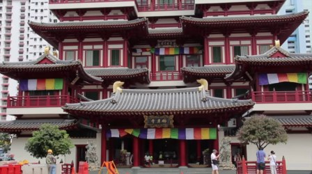 | 一座红墙多层的中式寺庙建筑，门前悬挂着彩色经幡，周围有行人。 寺庙宗教建筑彩色经幡城市景观宗教场所建筑摄影 远景 · 白天 · 宁静祥和 · 静止 | 0.53 技术 -0.046 美学 +0.057 VLM 3/5 | — 亮度 93 清晰 1596 抖动 0.1 | 保留 2.6 美学模型 0.53（技术 -0.046 / 美学 +0.057）；VLM 精彩度 3/5（权重 20%）；时长仅 1.3s |
| #2 镜头 2 | 0:05.8–0:07.9 2.2s |  | 两盏红色灯笼在天空下悬挂，背景是建筑和云朵。 灯笼节日建筑城市天空红灯笼静谧 远景 · 白天 · 宁静 · 灯笼静止悬挂 | 0.71 技术 -0.028 美学 +0.116 VLM 3/5 | — 亮度 185 清晰 340 抖动 0.3 | 保留 ★入选 3.7 美学模型 0.71（技术 -0.028 / 美学 +0.116）；VLM 精彩度 3/5（权重 20%） |
| #3 镜头 3 | 0:07.9–0:11.2 3.3s |   | 色彩斑斓的东南亚风格建筑，悬挂着红色灯笼，展现热带风情。 建筑街景灯笼热带风情建筑城市装饰文化 中景 · 白天 · 温馨 · 静止 | 0.69 技术 -0.030 美学 +0.106 VLM 3/5 | — 亮度 135 清晰 1475 抖动 0.3 | 保留 3.6 美学模型 0.69（技术 -0.030 / 美学 +0.106）；VLM 精彩度 3/5（权重 20%） |
| #4 镜头 4 | 0:11.2–0:13.8 2.6s |  | 红色灯笼和中国结悬挂在建筑外，营造出喜庆的节日氛围。 春节节日装饰灯笼中国结喜庆传统建筑 近景 · 白天 · 喜庆 · 静止 | 0.68 技术 -0.030 美学 +0.105 VLM 4/5 | — 亮度 122 清晰 1343 抖动 0.1 | 保留 ★入选 3.8 美学模型 0.68（技术 -0.030 / 美学 +0.105）；VLM 精彩度 4/5（权重 20%） |
| #5 镜头 5 | 0:13.8–0:17.0 3.1s |   | 彩色筷子整齐排列在金属架上，展示着丰富的色彩和图案。 筷子商品彩色陈列生活用品视觉色彩 近景 · 白天 · 温馨 · 静置 | 0.61 技术 -0.078 美学 +0.111 VLM 3/5 | — 亮度 129 清晰 1148 抖动 0.1 | 保留 3.3 美学模型 0.61（技术 -0.078 / 美学 +0.111）；VLM 精彩度 3/5（权重 20%） |
| #6 镜头 6 | 0:17.0–0:19.6 2.6s |  | 镜头展示一座色彩斑斓的印度教寺庙建筑，一只白色神兽雕像卧在神庙顶部。 印度教寺庙神兽宗教建筑宗教艺术 特写 · 白天 · 庄严 · 镜头固定 | 0.66 技术 -0.045 美学 +0.108 VLM 4/5 | — 亮度 173 清晰 1238 抖动 0.1 | 保留 ★入选 3.7 美学模型 0.66（技术 -0.045 / 美学 +0.108）；VLM 精彩度 4/5（权重 20%） |
| #7 镜头 7 | 0:19.6–0:23.6 4.0s |   | 一座色彩斑斓的印度教神庙的塔庙，展示了其精美的雕刻和多层结构。 印度教神庙宗教建筑宗教艺术宗教建筑印度文化 远景 · 白天 · 庄严 · 静态 | 0.52 技术 -0.058 美学 +0.060 VLM 4/5 | — 亮度 158 清晰 872 抖动 0.0 | 保留 3.3 美学模型 0.52（技术 -0.058 / 美学 +0.060）；VLM 精彩度 4/5（权重 20%） |
| #8 镜头 8 | 0:23.6–0:25.6 2.0s |  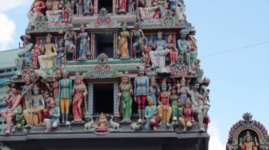 | 一座色彩斑斓的印度教寺庙神庙顶部，布满精美的雕像和装饰，展示了丰富的宗教艺术。 宗教印度神庙雕像艺术文化建筑 特写 · 白天 · 庄严 · 静态 | 0.35 技术 -0.066 美学 +0.000 VLM 4/5 | — 亮度 122 清晰 1468 抖动 0.1 | 保留 2.7 美学模型 0.35（技术 -0.066 / 美学 +0.000）；VLM 精彩度 4/5（权重 20%） |
| #9 镜头 9 | 0:25.6–0:27.1 1.5s |  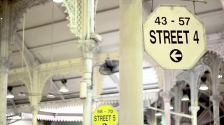 | 室内市场或建筑的街景，显示街道4和5的指示牌。 街景指示牌室内建筑城市交通标志 中景 · 白天 · 平静 · 静态 | 0.48 技术 -0.066 美学 +0.051 VLM 3/5 | — 亮度 172 清晰 537 抖动 0.1 | 保留 2.9 美学模型 0.48（技术 -0.066 / 美学 +0.051）；VLM 精彩度 3/5（权重 20%） |
| #10 镜头 10 | 0:27.1–0:28.4 1.3s |  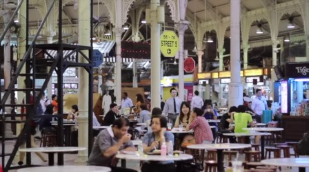 | 室内市场餐厅，人们在桌旁用餐，背景是高大的拱形结构。 餐厅市场人群美食室内休闲美食街 全景 · 白天 · 热闹 · 用餐 | 0.41 技术 -0.055 美学 +0.016 VLM 3/5 | — 亮度 104 清晰 1355 抖动 0.1 | 保留 2.2 美学模型 0.41（技术 -0.055 / 美学 +0.016）；VLM 精彩度 3/5（权重 20%）；时长仅 1.3s |
| #11 镜头 11 | 0:28.4–0:30.4 2.0s |  | 一名男子在餐厅柜台前与店员交流，店员在展示菜单。 餐厅顾客店员菜单互动美食美食店美食场景 中景 · 白天 · 日常 · 顾客指着菜单与店员交流 | 0.67 技术 -0.040 美学 +0.108 VLM 4/5 | — 亮度 112 清晰 399 抖动 0.1 | 保留 ★入选 3.8 美学模型 0.67（技术 -0.040 / 美学 +0.108）；VLM 精彩度 4/5（权重 20%） |
| #12 镜头 12 | 0:30.4–0:32.9 2.5s |   | 一个正在旋转的白色吊扇，背景是华丽的白色雕花柱子和天花板。 吊扇室内建筑装饰旋转古典细节 中景 · 白天 · 宁静 · 吊扇旋转 | 0.45 技术 -0.068 美学 +0.042 VLM 4/5 | — 亮度 132 清晰 152 抖动 0.1 | 保留 3.0 美学模型 0.45（技术 -0.068 / 美学 +0.042）；VLM 精彩度 4/5（权重 20%） |
| #13 镜头 13 | 0:32.9–0:34.6 1.7s |  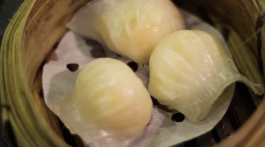 | 竹蒸笼里冒着热气的三只虾饺，晶莹剔透，诱人食欲。 美食虾饺蒸笼美食特写中式小吃美食摄影 特写 · 白天 · 温馨 · 静止 | 0.71 技术 -0.070 美学 +0.149 VLM 4/5 | 偏糊 亮度 113 清晰 42 抖动 0.1 | 保留 2.4 美学模型 0.71（技术 -0.070 / 美学 +0.149）；VLM 精彩度 4/5（权重 20%）；画面偏糊（清晰度 42） |
| #14 镜头 14 | 0:34.6–0:36.0 1.4s |  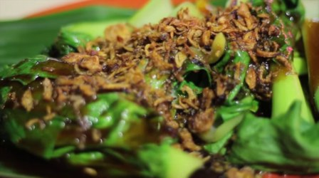 | 特写镜头展示一盘淋有酱汁的炒菜，菜叶翠绿，上面撒有炸过的葱花。 美食炒菜葱花特写美食制作 近景 · 白天 · 美味 · 特写 | 0.66 技术 -0.049 美学 +0.110 VLM 4/5 | — 亮度 94 清晰 272 抖动 0.1 | 保留 3.2 美学模型 0.66（技术 -0.049 / 美学 +0.110）；VLM 精彩度 4/5（权重 20%）；时长仅 1.4s |
| #15 镜头 15 | 0:36.0–0:40.8 4.8s |   | 特写镜头下，手拿着串在竹签上的食物，正在被撕开。 食物特写美食用餐动态 特写 · 白天 · 温馨 · 撕开食物 | 0.35 技术 -0.100 美学 +0.025 VLM 4/5 | 偏糊、抖动 亮度 134 清晰 7 抖动 66.4 | 删除 0.2 美学模型 0.35（技术 -0.100 / 美学 +0.025）；VLM 精彩度 4/5（权重 20%）；画面偏糊（清晰度 7）；抖动明显 |
| #16 镜头 16 | 0:40.8–0:42.2 1.3s |  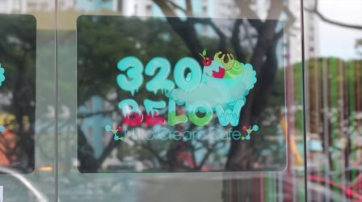 | 玻璃门上展示着320 BELOW冰淇淋店的彩色招牌 招牌冰淇淋店320 BELOW彩色商业户外 近景 · 白天 · 活泼 · 静止 | 0.39 技术 -0.101 美学 +0.044 VLM 3/5 | — 亮度 120 清晰 233 抖动 0.8 | 保留 2.1 美学模型 0.39（技术 -0.101 / 美学 +0.044）；VLM 精彩度 3/5（权重 20%）；时长仅 1.3s |
| #17 镜头 17 | 0:42.2–0:43.6 1.5s |  | 木质架子上陈列着多只色彩缤纷、印有手绘图案的杯子。 杯子手绘儿童画文创装饰品展示艺术温馨 中景 · 白天 · 温馨、治愈 · 静止 | 0.61 技术 -0.078 美学 +0.112 VLM 3/5 | — 亮度 181 清晰 196 抖动 0.2 | 保留 2.9 美学模型 0.61（技术 -0.078 / 美学 +0.112）；VLM 精彩度 3/5（权重 20%）；时长仅 1.5s |
| #18 镜头 18 | 0:43.6–0:46.3 2.6s |   | 一位女性在冰淇淋店的柜台前微笑，手中拿着冰淇淋。 女性冰淇淋微笑冰淇淋店美食美食广告甜品美食场景 中景 · 白天 · 愉快 · 微笑 | 0.84 技术 -0.019 美学 +0.185 VLM 4/5 | 偏糊 亮度 84 清晰 109 抖动 0.1 | 保留 2.8 美学模型 0.84（技术 -0.019 / 美学 +0.185）；VLM 精彩度 4/5（权重 20%）；画面偏糊（清晰度 109） |
| #19 镜头 19 | 0:46.3–0:48.1 1.9s |  | 彩色凳子在咖啡馆里，背景是满墙的杯子。 咖啡馆彩色凳子杯子室内静物色彩生活场景 中景 · 白天 · 温馨 · 静止 | 0.59 技术 -0.082 美学 +0.107 VLM 3/5 | — 亮度 131 清晰 155 抖动 0.1 | 保留 3.3 美学模型 0.59（技术 -0.082 / 美学 +0.107）；VLM 精彩度 3/5（权重 20%） |
| #20 镜头 20 | 0:48.1–0:49.7 1.5s |  | 一位女性在冰淇淋店吃冰淇淋的特写镜头。 女性冰淇淋特写美食甜点日常 特写 · 白天 · 轻松 · 吃冰淇淋 | 0.82 技术 -0.011 美学 +0.162 VLM 4/5 | 偏糊 亮度 83 清晰 119 抖动 0.7 | 保留 2.7 美学模型 0.82（技术 -0.011 / 美学 +0.162）；VLM 精彩度 4/5（权重 20%）；画面偏糊（清晰度 119） |
| #21 镜头 21 | 0:49.7–0:53.1 3.4s |  | 男子在室内吃冰淇淋，背景是彩色线轴。 吃冰淇淋室内零食日常美食休闲生活 中景 · 白天 · 轻松愉快 · 吃冰淇淋 | 0.85 技术 -0.014 美学 +0.188 VLM 4/5 | — 亮度 135 清晰 416 抖动 2.6 | 保留 ★入选 4.3 美学模型 0.85（技术 -0.014 / 美学 +0.188）；VLM 精彩度 4/5（权重 20%） |
| #22 镜头 22 | 0:53.1–0:56.1 3.0s |   | 彩色条纹墙和街角的街牌，展示街景。 街景彩色墙街牌建筑城市色彩户外 中景 · 白天 · 活泼 · 静止 | 0.54 技术 -0.048 美学 +0.061 VLM 3/5 | — 亮度 146 清晰 487 抖动 0.3 | 保留 3.1 美学模型 0.54（技术 -0.048 / 美学 +0.061）；VLM 精彩度 3/5（权重 20%） |
| #23 镜头 23 | 0:56.1–1:00.6 4.5s |   | 超市货架上陈列着各种新鲜蔬菜和农产品。 蔬菜农产品超市货架新鲜生活日常 中景 · 白天 · 平静 · 静止 | 0.44 技术 -0.063 美学 +0.033 VLM 3/5 | — 亮度 130 清晰 1116 抖动 0.1 | 保留 2.8 美学模型 0.44（技术 -0.063 / 美学 +0.033）；VLM 精彩度 3/5（权重 20%） |
| #24 镜头 24 | 1:00.6–1:02.3 1.8s |  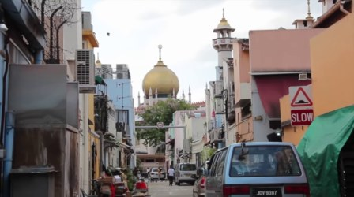 | 一条狭窄的街道，远处可见一座金色圆顶的清真寺，街道上有车辆和行人。 城市清真寺街道车辆行人建筑宗教日常 中景 · 白天 · 宁静 · 镜头静止 | 0.49 技术 -0.038 美学 +0.034 VLM 3/5 | — 亮度 126 清晰 818 抖动 0.1 | 保留 3.0 美学模型 0.49（技术 -0.038 / 美学 +0.034）；VLM 精彩度 3/5（权重 20%） |
| #25 镜头 25 | 1:02.3–1:03.4 1.0s |  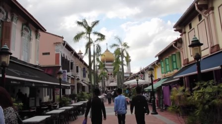 | 一条繁华的步行街，人们在彩色建筑和棕榈树下悠闲地行走。 城市街景步行街行人建筑棕榈树清真寺户外旅游景点 中景 · 白天 · 悠闲 · 行人行走 | 0.43 技术 -0.054 美学 +0.021 VLM 4/5 | — 亮度 110 清晰 900 抖动 0.2 | 保留 2.5 美学模型 0.43（技术 -0.054 / 美学 +0.021）；VLM 精彩度 4/5（权重 20%）；时长仅 1.0s |
| #26 镜头 26 | 1:03.4–1:04.7 1.3s |  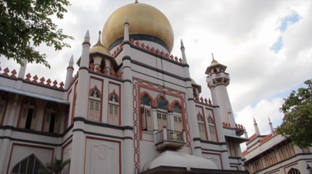 | 一座带有金色圆顶的白色建筑，建筑上有阳台和窗户，周围有树木。 建筑地标宗教旅游风景户外历史建筑 远景 · 白天 · 宁静 · 静止 | 0.72 技术 -0.046 美学 +0.133 VLM 3/5 | — 亮度 142 清晰 1274 抖动 0.1 | 保留 3.2 美学模型 0.72（技术 -0.046 / 美学 +0.133）；VLM 精彩度 3/5（权重 20%）；时长仅 1.3s |
| #27 镜头 27 | 1:04.7–1:06.0 1.3s |  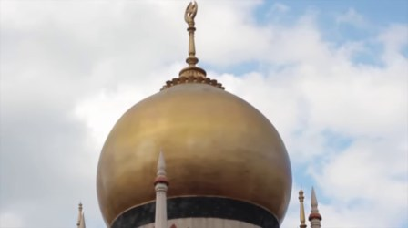 | 金色圆顶的清真寺建筑特写，天空有云彩。 清真寺建筑圆顶宗教天空云彩宗教建筑 特写 · 白天 · 宁静 · 镜头固定 | 0.57 技术 -0.057 美学 +0.081 VLM 3/5 | 偏糊 亮度 187 清晰 78 抖动 0.0 | 删除 1.2 美学模型 0.57（技术 -0.057 / 美学 +0.081）；VLM 精彩度 3/5（权重 20%）；画面偏糊（清晰度 78）；时长仅 1.3s |
| #28 镜头 28 | 1:06.0–1:11.3 5.3s |   | 森林中树木茂密，光线斑驳，画面从暗处逐渐亮起，呈现自然环境的静谧感。 森林自然静谧光线树木户外自然景观自然光 中景 · 白天 · 宁静 · 镜头从暗处逐渐亮起，光线从树叶间透出 | 0.22 技术 -0.087 美学 -0.046 VLM 3/5 | — 亮度 44 清晰 1006 抖动 5.2 | 保留 2.1 美学模型 0.22（技术 -0.087 / 美学 -0.046）；VLM 精彩度 3/5（权重 20%） |
| #29 镜头 29 | 1:11.3–1:16.2 4.9s |   | 一名女子背对镜头，从绿色的森林步道桥上走过。 森林步道女性自然户外行走自然风光 中景 · 白天 · 宁静 · 行走 | 0.36 技术 -0.095 美学 +0.027 VLM 4/5 | — 亮度 53 清晰 2284 抖动 0.9 | 保留 2.8 美学模型 0.36（技术 -0.095 / 美学 +0.027）；VLM 精彩度 4/5（权重 20%） |
| #30 镜头 30 | 1:16.2–1:20.9 4.7s |   | 茂密森林中，一株红色花朵在绿叶间绽放，画面静谧自然。 自然森林植物花朵静谧绿色 中景 · 白天 · 宁静 · 静止 | 0.53 技术 -0.060 美学 +0.068 VLM 3/5 | — 亮度 98 清晰 3027 抖动 0.3 | 保留 3.1 美学模型 0.53（技术 -0.060 / 美学 +0.068）；VLM 精彩度 3/5（权重 20%） |
| #31 镜头 31 | 1:20.9–1:26.0 5.1s |   | 一只斑点蜥蜴在布满碎石和落叶的地面爬行 蜥蜴自然爬行野外动物野生动物自然环境 特写 · 白天 · 自然 · 爬行 | 0.61 技术 -0.042 美学 +0.085 VLM 3/5 | — 亮度 95 清晰 1536 抖动 0.7 | 保留 3.4 美学模型 0.61（技术 -0.042 / 美学 +0.085）；VLM 精彩度 3/5（权重 20%） |
| #32 镜头 32 | 1:26.0–1:31.3 5.2s |  | 一只猴子在茂密的森林中攀爬树干 猴子森林自然动物攀爬野生动物丛林 中景 · 白天 · 自然 · 攀爬 | 0.78 技术 -0.022 美学 +0.147 VLM 3/5 | — 亮度 112 清晰 1284 抖动 0.7 | 保留 ★入选 3.9 美学模型 0.78（技术 -0.022 / 美学 +0.147）；VLM 精彩度 3/5（权重 20%） |
| #33 镜头 33 | 1:31.3–1:35.5 4.3s |   | 热带花园中的池塘，水面上漂浮着巨大的睡莲叶，周围绿植茂盛。 热带植物睡莲水池花园自然景观静谧 中景 · 白天 · 宁静 · 静止 | 0.59 技术 -0.026 美学 +0.064 VLM 3/5 | — 亮度 137 清晰 1916 抖动 0.1 | 保留 3.3 美学模型 0.59（技术 -0.026 / 美学 +0.064）；VLM 精彩度 3/5（权重 20%） |
| #34 镜头 34 | 1:35.5–1:41.1 5.5s |   | 一朵粉红色的花在绿叶丛中绽放，画面静谧自然。 花卉自然植物特写静物自然风光植物花朵 特写 · 白天 · 宁静 · 静止 | 0.80 技术 -0.010 美学 +0.148 VLM 3/5 | — 亮度 104 清晰 494 抖动 0.1 | 保留 4.0 美学模型 0.80（技术 -0.010 / 美学 +0.148）；VLM 精彩度 3/5（权重 20%） |
| #35 镜头 35 | 1:41.1–1:45.5 4.5s |  | 森林中一只蜘蛛在蛛网上静止，背景是模糊的绿植。 蜘蛛森林自然特写昆虫静物 特写 · 白天 · 宁静 · 静止 | 0.86 技术 -0.033 美学 +0.210 VLM 4/5 | — 亮度 160 清晰 161 抖动 0.2 | 保留 ★入选 4.4 美学模型 0.86（技术 -0.033 / 美学 +0.210）；VLM 精彩度 4/5（权重 20%） |
| #36 镜头 36 | 1:45.5–1:51.6 6.1s |  | 热带植物的红色花朵在不同时间点的特写 热带植物花朵特写自然植物红花自然风光 特写 · 白天 · 宁静 · 镜头移动 | 0.77 技术 -0.027 美学 +0.144 VLM 4/5 | — 亮度 140 清晰 740 抖动 0.3 | 保留 ★入选 4.1 美学模型 0.77（技术 -0.027 / 美学 +0.144）；VLM 精彩度 4/5（权重 20%） |
| #37 镜头 37 | 1:51.6–1:54.1 2.5s |   | 池塘中漂浮着几片绿色的莲叶，水面有轻微波纹。 莲叶池塘自然静谧水景植物自然风光 特写 · 白天 · 宁静 · 静止 | 0.64 技术 -0.049 美学 +0.101 VLM 3/5 | — 亮度 119 清晰 374 抖动 2.7 | 保留 3.4 美学模型 0.64（技术 -0.049 / 美学 +0.101）；VLM 精彩度 3/5（权重 20%） |
| #38 镜头 38 | 1:54.1–1:58.1 4.0s |   | 一只白天的白天白鹅在水面上游动，留下涟漪。 天鹅水自然动物静谧水面涟漪 远景 · 白天 · 宁静 · 游动 | 0.31 技术 -0.094 美学 +0.005 VLM 4/5 | — 亮度 221 清晰 1120 抖动 2.8 | 保留 2.6 美学模型 0.31（技术 -0.094 / 美学 +0.005）；VLM 精彩度 4/5（权重 20%） |
| #39 镜头 38 | 1:58.1–2:02.2 4.0s |   | 一只白天鹅在水中游动，随后两只天鹅从岸边浮出水面。 天鹅水边自然动物静谧水波 中景 · 白天 · 宁静 · 游动、浮出水面 | 0.39 技术 -0.074 美学 +0.024 VLM 4/5 | — 亮度 215 清晰 419 抖动 5.8 | 保留 2.9 美学模型 0.39（技术 -0.074 / 美学 +0.024）；VLM 精彩度 4/5（权重 20%） |
| #40 镜头 39 | 2:02.2–2:07.0 4.8s |   | 新加坡滨海湾金沙酒店的空中花园在阴天中缓缓旋转。 滨海湾金沙酒店城市景观建筑特写天空动态镜头 远景 · 白天 · 宁静、现代感 · 镜头缓慢移动，展示建筑顶部的圆形结构 | 0.55 技术 -0.045 美学 +0.063 VLM 4/5 | 偏糊 亮度 165 清晰 57 抖动 0.2 | 删除 1.9 美学模型 0.55（技术 -0.045 / 美学 +0.063）；VLM 精彩度 4/5（权重 20%）；画面偏糊（清晰度 57） |
| #41 镜头 40 | 2:07.0–2:11.9 4.9s |   | 城市全景在雾霾中缓缓移动 城市景观雾霾建筑群远景都市 远景 · 白天 · 沉静、朦胧 · 镜头缓慢移动 | 0.31 技术 -0.102 美学 +0.012 VLM 3/5 | — 亮度 176 清晰 316 抖动 0.3 | 保留 2.4 美学模型 0.31（技术 -0.102 / 美学 +0.012）；VLM 精彩度 3/5（权重 20%） |
| #42 镜头 41 | 2:11.9–2:17.1 5.2s |  | 一位女士戴着墨镜站在高楼阳台上，背景是城市天际线。 女性城市风光阳台上墨镜都市生活 中景 · 白天 · 悠闲、时尚 · 站立 | 0.63 技术 -0.034 美学 +0.085 VLM 4/5 | — 亮度 140 清晰 211 抖动 0.2 | 保留 ★入选 3.6 美学模型 0.63（技术 -0.034 / 美学 +0.085）；VLM 精彩度 4/5（权重 20%） |
| #43 镜头 41 | 2:17.1–2:22.2 5.2s |   | 一位女士在城市天台俯瞰风景，戴着墨镜，身旁放着一杯鸡尾酒。 城市风光天台女性墨镜鸡尾酒休闲 中景 · 白天 · 放松、惬意 · 站立 | 0.61 技术 -0.039 美学 +0.081 VLM 4/5 | — 亮度 140 清晰 217 抖动 0.1 | 保留 3.6 美学模型 0.61（技术 -0.039 / 美学 +0.081）；VLM 精彩度 4/5（权重 20%） |
| #44 镜头 42 | 2:22.2–2:27.2 5.0s |   | 城市高楼林立，天空有雾霾，呈现都市全景。 城市景观高楼大厦雾霾天气都市风光建筑群 远景 · 白天 · 沉闷 · 镜头静止 | 0.45 技术 -0.089 美学 +0.057 VLM 3/5 | — 亮度 156 清晰 434 抖动 0.1 | 保留 2.8 美学模型 0.45（技术 -0.089 / 美学 +0.057）；VLM 精彩度 3/5（权重 20%） |
| #45 镜头 43 | 2:27.2–2:32.5 5.3s |   | 男子在城市背景下微笑，镜头轻微移动。 城市背景人物特写微笑户外自然光视频素材 中景 · 白天 · 愉悦 · 微笑 | 0.74 技术 -0.030 美学 +0.134 VLM 4/5 | 偏糊 亮度 157 清晰 135 抖动 1.0 | 保留 2.5 美学模型 0.74（技术 -0.030 / 美学 +0.134）；VLM 精彩度 4/5（权重 20%）；画面偏糊（清晰度 135） |
| #46 镜头 44 | 2:32.5–2:37.4 5.0s |   | 新加坡鱼尾狮雕像喷水，周围有游客和城市建筑。 旅游景点城市风光地标建筑喷泉鱼尾狮户外活动 中景 · 白天 · 宁静 · 喷水 | 0.60 技术 -0.039 美学 +0.075 VLM 4/5 | — 亮度 133 清晰 677 抖动 0.2 | 保留 3.5 美学模型 0.60（技术 -0.039 / 美学 +0.075）；VLM 精彩度 4/5（权重 20%） |
| #47 镜头 45 | 2:37.4–2:42.4 5.0s |  | 新加坡鱼尾狮雕像喷水，背景是现代化高楼大厦。 鱼尾狮新加坡城市景观建筑喷水地标 远景 · 白天 · 壮观 · 喷水 | 0.69 技术 -0.040 美学 +0.117 VLM 5/5 | — 亮度 182 清晰 464 抖动 0.2 | 保留 ★入选 4.0 美学模型 0.69（技术 -0.040 / 美学 +0.117）；VLM 精彩度 5/5（权重 20%） |
| #48 镜头 46 | 2:42.4–2:47.7 5.3s |   | 夜晚的鱼尾狮雕像喷水，背景是滨海湾金沙酒店。 城市景观夜间地标建筑鱼尾狮雕像喷泉旅游景点 远景 · 夜晚 · 宁静、壮观 · 喷水 | 0.59 技术 -0.050 美学 +0.081 VLM 4/5 | 低照度 亮度 32 清晰 423 抖动 0.4 | 保留 3.5 美学模型 0.59（技术 -0.050 / 美学 +0.081）；VLM 精彩度 4/5（权重 20%） |
| #49 镜头 47 | 2:47.7–2:52.7 5.0s |   | 夜晚的鱼尾狮雕像喷水，背景是城市灯光。 鱼尾狮夜间城市景观喷水地标建筑 远景 · 夜晚 · 宁静、壮观 · 喷水 | 0.30 技术 -0.084 美学 -0.010 VLM 4/5 | 低照度 亮度 22 清晰 960 抖动 0.2 | 保留 2.6 美学模型 0.30（技术 -0.084 / 美学 -0.010）；VLM 精彩度 4/5（权重 20%） |
| #50 镜头 48 | 2:52.7–2:56.9 4.2s | 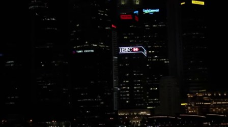 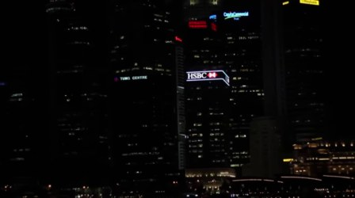 | 夜晚的城市天际线，高楼大厦灯火通明，其中HSBC大楼亮着招牌。 城市夜景高楼大厦HSBC商业中心都市风光 远景 · 夜晚 · 繁华 · 镜头静止 | 0.31 技术 -0.088 美学 -0.001 VLM 3/5 | 低照度 亮度 7 清晰 462 抖动 0.3 | 保留 2.4 美学模型 0.31（技术 -0.088 / 美学 -0.001）；VLM 精彩度 3/5（权重 20%） |
| #51 镜头 48 | 2:56.9–3:01.1 4.2s |   | 视频片段为完全黑屏，无任何可见内容。 黑屏静止画面无内容 特写 · 夜晚 · 无 · 无 | 0.12 技术 -0.176 美学 -0.043 VLM 1/5 | 低照度、偏糊 亮度 0 清晰 0 抖动 0.0 | 删除 -0.1 美学模型 0.12（技术 -0.176 / 美学 -0.043）；VLM 精彩度 1/5（权重 20%）；画面偏糊（清晰度 0） |
02_bled_bohinj_vlog.webm（dd0df77c6142e62f）
2:33.0 · 29.97 fps · 无音轨 · 切点 13（硬切 13，叠化 0）· 镜头 14 · 片段 27 · 保留 22 · 切分耗时 35.46s
色条：绿色越深得分越高，红色为建议删除， 蓝框为入选建议时间线的片段。
建议时间线（30.7s / 目标 30s）
02_bled_bohinj_vlog.webm 2:27.1–2:31.1
湖面上一艘带遮阳篷的木船在平静水面上行驶
得分 4.0，远景，湖景、游船、水上活动
 2. 主体 4.0s
2. 主体 4.0s02_bled_bohinj_vlog.webm 0:01.5–0:05.5
一位女士站在湖边，背景是秋日山林和清澈的湖水。
得分 3.5，中景，湖边风景、秋日景色、自然风光
 3. 主体 4.0s
3. 主体 4.0s02_bled_bohinj_vlog.webm 0:32.8–0:36.8
湖面上几艘木船停靠在岸边，游客们正在准备登船或已上船。
得分 3.5，中景，湖边、水上活动、旅游
 4. 主体 4.0s
4. 主体 4.0s02_bled_bohinj_vlog.webm 1:35.7–1:39.7
宁静湖泊与群山倒影，水面有小船和水鸟。
得分 3.2，远景，风景、湖泊、自然
 5. 主体 4.0s
5. 主体 4.0s02_bled_bohinj_vlog.webm 1:44.3–1:48.3
从湖边木栏杆视角拍摄的秋日山景，水面平静，远处山脉层叠。
得分 3.3，远景，秋日风景、湖泊、山景
 6. 主体 2.7s
6. 主体 2.7s02_bled_bohinj_vlog.webm 1:48.4–1:51.1
湖光山色，秋日景色，水面平静。
得分 3.2，远景，自然风光、秋日景色、湖泊
02_bled_bohinj_vlog.webm 2:21.4–2:25.4
一艘载有游客的木船在湖上划行，船尾有人用桨划水。
得分 3.8，中景，湖上划船、水上活动、旅游景点
 8. 收尾 4.0s
8. 收尾 4.0s02_bled_bohinj_vlog.webm 1:21.2–1:25.2
湖边秋日景色，山峦起伏，树木变色，有行人和骑车者。
得分 3.3，远景，秋景、湖边、自然风光
逐片段标签
| 片段 | 时间 | 关键帧 | 模型标签 | 美学分 / VLM 精彩度 | 画质信号 | 建议 |
|---|---|---|---|---|---|---|
| #0 镜头 0 | 0:00.0–0:07.0 7.0s |  | 一位女士站在湖边，背景是秋日山林和清澈的湖水。 湖边风景秋日景色自然风光女性户外活动旅行 中景 · 白天 · 宁静、惬意 · 站立 | 0.61 技术 -0.071 美学 +0.105 VLM 4/5 | — 亮度 118 清晰 522 抖动 0.3 | 保留 ★入选 3.5 美学模型 0.61（技术 -0.071 / 美学 +0.105）；VLM 精彩度 4/5（权重 20%） |
| #1 镜头 0 | 0:07.0–0:14.0 7.0s |   | 一位女士站在湖边，背景是秋日山林和倒映在水中的景色。 户外自然风光湖边秋日女性风景摄影 中景 · 白天 · 宁静、自然 · 站立 | 0.62 技术 -0.064 美学 +0.107 VLM 3/5 | — 亮度 121 清晰 514 抖动 0.2 | 保留 3.4 美学模型 0.62（技术 -0.064 / 美学 +0.107）；VLM 精彩度 3/5（权重 20%） |
| #2 镜头 1 | 0:14.0–0:17.3 3.2s |   | 白色背景上出现手写体文字'T'和'TRAVEL OPT'。 文字动画手写字体旅行品牌标识 特写 · 白天 · 简约、现代 · 文字出现 | 0.31 技术 -0.080 美学 -0.006 VLM 3/5 | 抖动 亮度 254 清晰 235 抖动 59.2 | 删除 1.4 美学模型 0.31（技术 -0.080 / 美学 -0.006）；VLM 精彩度 3/5（权重 20%）；抖动明显 |
| #3 镜头 2 | 0:17.3–0:24.3 7.0s |   | 一个穿着黑色上衣和白色裙子的人在石阶上行走，背景是带有秋色树木的建筑。 户外石阶建筑秋日行人自然景观 中景 · 白天 · 宁静 · 行走 | 0.39 技术 -0.069 美学 +0.020 VLM 3/5 | 抖动 亮度 99 清晰 479 抖动 72.0 | 删除 1.7 美学模型 0.39（技术 -0.069 / 美学 +0.020）；VLM 精彩度 3/5（权重 20%）；抖动明显 |
| #4 镜头 2 | 0:24.3–0:31.3 7.0s |   | 湖面上两艘小船停靠在码头，游客们正在准备登船。 湖边游船水上活动自然风光旅游景点 中景 · 白天 · 宁静 · 船只停靠、乘客上船 | 0.58 技术 -0.037 美学 +0.068 VLM 4/5 | — 亮度 72 清晰 940 抖动 6.9 | 保留 3.5 美学模型 0.58（技术 -0.037 / 美学 +0.068）；VLM 精彩度 4/5（权重 20%） |
| #5 镜头 2 | 0:31.3–0:38.3 7.0s |  | 湖面上几艘木船停靠在岸边，游客们正在准备登船或已上船。 湖边水上活动旅游木船游客自然风光 中景 · 白天 · 悠闲 · 船只停靠和乘客上下船 | 0.59 技术 -0.028 美学 +0.063 VLM 4/5 | — 亮度 77 清晰 1181 抖动 1.1 | 保留 ★入选 3.5 美学模型 0.59（技术 -0.028 / 美学 +0.063）；VLM 精彩度 4/5（权重 20%） |
| #6 镜头 2 | 0:38.3–0:45.3 7.0s |   | 湖面上两艘木船并排停靠，船上游客和工作人员在进行准备活动。 湖边木船游客水上活动自然风光 中景 · 白天 · 宁静 · 船只停靠、人员准备 | 0.58 技术 -0.033 美学 +0.065 VLM 3/5 | — 亮度 75 清晰 878 抖动 1.2 | 保留 3.3 美学模型 0.58（技术 -0.033 / 美学 +0.065）；VLM 精彩度 3/5（权重 20%） |
| #7 镜头 2 | 0:45.3–0:52.3 7.0s |   | 湖边木船上的游客和工作人员在准备划船 湖边木船划船旅游自然风光 中景 · 白天 · 宁静 · 准备划船 | 0.55 技术 -0.030 美学 +0.048 VLM 3/5 | — 亮度 81 清晰 884 抖动 1.0 | 保留 3.1 美学模型 0.55（技术 -0.030 / 美学 +0.048）；VLM 精彩度 3/5（权重 20%） |
| #8 镜头 2 | 0:52.3–0:59.4 7.0s |   | 湖面上两艘游船停靠在岸边，游客们正在准备登船。 湖边游船水上活动自然风光旅游风景 中景 · 白天 · 宁静 · 游船停靠、乘客上船 | 0.55 技术 -0.027 美学 +0.048 VLM 3/5 | — 亮度 84 清晰 736 抖动 0.5 | 保留 3.2 美学模型 0.55（技术 -0.027 / 美学 +0.048）；VLM 精彩度 3/5（权重 20%） |
| #9 镜头 3 | 0:59.4–1:06.8 7.4s |   | 湖边秋景，远处山峦与教堂在晴空下静谧呈现。 秋景教堂湖泊自然风光山景风景摄影 远景 · 白天 · 宁静、祥和 · 镜头缓慢移动，从近处拍摄到远景。 | 0.44 技术 -0.063 美学 +0.033 VLM 4/5 | 抖动 亮度 106 清晰 156 抖动 12.7 | 保留 2.0 美学模型 0.44（技术 -0.063 / 美学 +0.033）；VLM 精彩度 4/5（权重 20%）；抖动明显 |
| #10 镜头 3 | 1:06.8–1:14.1 7.4s |   | 湖面平静，远处山脉连绵，岸边秋色斑斓。 风景湖泊秋景山景自然风光慢镜头 远景 · 白天 · 宁静、自然 · 镜头缓慢移动 | 0.53 技术 -0.049 美学 +0.056 VLM 3/5 | — 亮度 111 清晰 172 抖动 8.8 | 保留 3.1 美学模型 0.53（技术 -0.049 / 美学 +0.056）；VLM 精彩度 3/5（权重 20%） |
| #11 镜头 4 | 1:14.1–1:20.7 6.5s |   | 一个宁静的湖畔风景，远处是连绵的山脉，草地上有行人和一只小动物。 自然风光湖泊山脉秋景户外活动风景摄影 远景 · 白天 · 宁静、平和 · 行走 | 0.52 技术 -0.043 美学 +0.049 VLM 3/5 | — 亮度 111 清晰 337 抖动 4.8 | 保留 3.1 美学模型 0.52（技术 -0.043 / 美学 +0.049）；VLM 精彩度 3/5（权重 20%） |
| #12 镜头 5 | 1:20.7–1:25.8 5.1s |  | 湖边秋日景色，山峦起伏，树木变色，有行人和骑车者。 秋景湖边自然风光户外活动风景摄影 远景 · 白天 · 宁静、自然 · 镜头从左向右移动 | 0.54 技术 -0.039 美学 +0.052 VLM 4/5 | — 亮度 109 清晰 390 抖动 5.3 | 保留 ★入选 3.3 美学模型 0.54（技术 -0.039 / 美学 +0.052）；VLM 精彩度 4/5（权重 20%） |
| #13 镜头 5 | 1:25.8–1:30.8 5.1s |   | 一个男人在湖边小路上骑行，背景是秋日山景。 秋日风景户外运动自然风光山景骑行湖泊 远景 · 白天 · 宁静、惬意 · 骑行 | 0.47 技术 -0.048 美学 +0.032 VLM 4/5 | — 亮度 111 清晰 320 抖动 7.2 | 保留 3.1 美学模型 0.47（技术 -0.048 / 美学 +0.032）；VLM 精彩度 4/5（权重 20%） |
| #14 镜头 6 | 1:30.8–1:35.4 4.6s |   | 镜头从一个乡村房屋和山坡上的秋林开始，逐渐拉远至湖景和远处山脉。 自然风光秋日景色湖景山脉乡村户外风景 远景 · 白天 · 宁静、开阔 · 镜头由近及远拉远 | 0.45 技术 -0.055 美学 +0.031 VLM 4/5 | 抖动 亮度 109 清晰 121 抖动 17.8 | 保留 2.0 美学模型 0.45（技术 -0.055 / 美学 +0.031）；VLM 精彩度 4/5（权重 20%）；抖动明显 |
| #15 镜头 6 | 1:35.4–1:39.9 4.6s |  | 宁静湖泊与群山倒影，水面有小船和水鸟。 风景湖泊自然山景倒影户外秋日 远景 · 白天 · 宁静、平和 · 静止 | 0.55 技术 -0.035 美学 +0.054 VLM 3/5 | — 亮度 108 清晰 102 抖动 4.5 | 保留 ★入选 3.2 美学模型 0.55（技术 -0.035 / 美学 +0.054）；VLM 精彩度 3/5（权重 20%） |
| #16 镜头 7 | 1:39.9–1:44.2 4.3s |   | 湖光山色，秋日森林与远山倒映在平静水面上 自然风光秋日景色湖泊山景风景摄影户外活动 远景 · 白天 · 宁静、优美 · 镜头缓慢移动 | 0.51 技术 -0.054 美学 +0.055 VLM 4/5 | — 亮度 107 清晰 198 抖动 6.9 | 保留 3.2 美学模型 0.51（技术 -0.054 / 美学 +0.055）；VLM 精彩度 4/5（权重 20%） |
| #17 镜头 7 | 1:44.2–1:48.4 4.3s |  | 从湖边木栏杆视角拍摄的秋日山景，水面平静，远处山脉层叠。 秋日风景湖泊山景自然风光户外静谧 远景 · 白天 · 宁静、自然 · 镜头缓慢移动 | 0.59 技术 -0.033 美学 +0.066 VLM 3/5 | — 亮度 97 清晰 136 抖动 10.4 | 保留 ★入选 3.3 美学模型 0.59（技术 -0.033 / 美学 +0.066）；VLM 精彩度 3/5（权重 20%） |
| #18 镜头 8 | 1:48.4–1:51.1 2.7s |  | 湖光山色，秋日景色，水面平静。 自然风光秋日景色湖泊山脉风景户外 远景 · 白天 · 宁静 · 镜头静止 | 0.55 技术 -0.033 美学 +0.053 VLM 3/5 | — 亮度 102 清晰 112 抖动 4.1 | 保留 ★入选 3.2 美学模型 0.55（技术 -0.033 / 美学 +0.053）；VLM 精彩度 3/5（权重 20%） |
| #19 镜头 9 | 1:51.1–1:56.2 5.0s |   | 餐桌上摆放着一份烤三文鱼和配菜，背景是盛有意大利面的锅。 美食餐食海鲜三文鱼意大利面餐桌用餐 近景 · 白天 · 温馨 · 食物静置 | 0.69 技术 -0.048 美学 +0.123 VLM 3/5 | 偏糊、抖动 亮度 120 清晰 86 抖动 21.2 | 删除 1.1 美学模型 0.69（技术 -0.048 / 美学 +0.123）；VLM 精彩度 3/5（权重 20%）；画面偏糊（清晰度 86）；抖动明显 |
| #20 镜头 10 | 1:56.2–2:00.2 4.0s |   | 一个户外公园场景，一名男子在路边弹奏乐器，背景有其他人和树木。 街头音乐户外表演公园人行道乐器自然光 中景 · 白天 · 宁静、休闲 · 演奏乐器 | 0.27 技术 -0.114 美学 +0.000 VLM 3/5 | 抖动 亮度 75 清晰 187 抖动 26.8 | 删除 1.3 美学模型 0.27（技术 -0.114 / 美学 +0.000）；VLM 精彩度 3/5（权重 20%）；抖动明显 |
| #21 镜头 11 | 2:00.2–2:06.8 6.6s |   | 一艘载有游客的木船在湖上划行，船夫正在用长桨划水。 湖上划船旅游水上活动自然风光风景户外运动 中景 · 白天 · 宁静 · 划船 | 0.67 技术 -0.029 美学 +0.100 VLM 4/5 | — 亮度 110 清晰 560 抖动 1.2 | 保留 3.8 美学模型 0.67（技术 -0.029 / 美学 +0.100）；VLM 精彩度 4/5（权重 20%） |
| #22 镜头 11 | 2:06.8–2:13.5 6.6s |  | 一艘载有游客的木船在湖上行驶，船上有人正在划桨。 湖上游船水上活动自然风光旅游景点户外运动风景照 中景 · 白天 · 宁静 · 划桨 | 0.68 技术 -0.040 美学 +0.113 VLM 4/5 | — 亮度 106 清晰 377 抖动 5.8 | 保留 3.8 美学模型 0.68（技术 -0.040 / 美学 +0.113）；VLM 精彩度 4/5（权重 20%） |
| #23 镜头 11 | 2:13.5–2:20.1 6.6s | 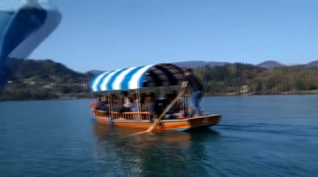 | 一艘载有游客的木船在湖上行驶，船夫正在划桨。 湖上划船水上活动自然风光旅游景点户外运动 中景 · 白天 · 宁静 · 划船 | 0.66 技术 -0.040 美学 +0.101 VLM 4/5 | — 亮度 107 清晰 263 抖动 4.0 | 保留 3.7 美学模型 0.66（技术 -0.040 / 美学 +0.101）；VLM 精彩度 4/5（权重 20%） |
| #24 镜头 11 | 2:20.1–2:26.7 6.6s | 一艘载有游客的木船在湖上划行，船尾有人用桨划水。 湖上划船水上活动旅游景点自然风光户外运动风景照 中景 · 白天 · 宁静 · 划船 | 0.69 技术 -0.027 美学 +0.105 VLM 4/5 | — 亮度 104 清晰 348 抖动 2.5 | 保留 ★入选 3.8 美学模型 0.69（技术 -0.027 / 美学 +0.105）；VLM 精彩度 4/5（权重 20%） | |
| #25 镜头 12 | 2:26.7–2:31.5 4.8s | 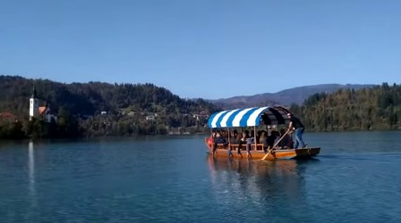 | 湖面上一艘带遮阳篷的木船在平静水面上行驶 湖景游船水上活动自然风光旅行风景户外 远景 · 白天 · 宁静祥和 · 游船行驶 | 0.74 技术 -0.034 美学 +0.133 VLM 4/5 | — 亮度 110 清晰 298 抖动 3.3 | 保留 ★入选 4.0 美学模型 0.74（技术 -0.034 / 美学 +0.133）；VLM 精彩度 4/5（权重 20%） |
| #26 镜头 13 | 2:31.5–2:33.0 1.5s | 一个粉色的订阅按钮在白色背景上，右侧出现铃铛图标。 订阅按钮动画视频界面点赞互动 特写 · 白天 · 可爱、简洁 · 按钮上的铃铛图标从静止变为点击状态 | 0.11 技术 -0.115 美学 -0.103 VLM 4/5 | — 亮度 177 清晰 197 抖动 0.9 | 删除 1.5 美学模型 0.11（技术 -0.115 / 美学 -0.103）；VLM 精彩度 4/5（权重 20%）；时长仅 1.5s |
03_aurora_timelapse.webm（7940fd1f6e740589）
2:08.2 · 30.00 fps · 无音轨 · 切点 8（硬切 8，叠化 0）· 镜头 9 · 片段 21 · 保留 15 · 切分耗时 25.88s
色条：绿色越深得分越高，红色为建议删除， 蓝框为入选建议时间线的片段。
建议时间线（12.0s / 目标 30s）
可用素材不足：去重后只凑到 12.0s，目标 30s
 1. 开场 4.0s
1. 开场 4.0s03_aurora_timelapse.webm 0:36.3–0:40.3
夜空中绿色极光在湖面和森林上空舞动，月光洒在水面上。
得分 3.8，全景，极光、自然景观、夜景
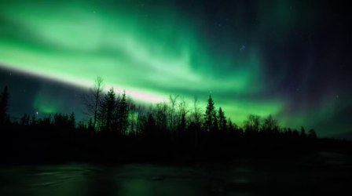
2. 主体 4.0s03_aurora_timelapse.webm 1:57.2–2:01.2
绿色极光在夜空中舞动，天空中呈现出绚丽的绿色光带。
得分 3.1，远景，极光、自然景观、夜景
 3. 收尾 4.0s
3. 收尾 4.0s03_aurora_timelapse.webm 1:47.1–1:51.1
夜空中绿色极光舞动，湖面倒映着璀璨光芒，月光与极光交相辉映。
得分 3.6，远景，极光、自然景观、夜景
逐片段标签
| 片段 | 时间 | 关键帧 | 模型标签 | 美学分 / VLM 精彩度 | 画质信号 | 建议 |
|---|---|---|---|---|---|---|
| #0 镜头 0 | 0:00.0–0:05.7 5.7s |   | 夜空中绿色极光在森林上空舞动 极光自然景观夜景森林户外星空 全景 · 夜晚 · 神秘、宁静 · 极光在天空中移动 | 0.31 技术 -0.095 美学 +0.005 VLM 5/5 | — 亮度 54 清晰 145 抖动 0.1 | 保留 2.8 美学模型 0.31（技术 -0.095 / 美学 +0.005）；VLM 精彩度 5/5（权重 20%） |
| #1 镜头 0 | 0:05.7–0:11.5 5.7s |   | 夜空下绿色极光在森林上空舞动 极光自然景观星空夜景户外自然风光 远景 · 夜晚 · 神秘、宁静 · 极光在天空中移动 | 0.33 技术 -0.086 美学 +0.006 VLM 4/5 | — 亮度 42 清晰 86 抖动 0.1 | 保留 2.6 美学模型 0.33（技术 -0.086 / 美学 +0.006）；VLM 精彩度 4/5（权重 20%） |
| #2 镜头 0 | 0:11.5–0:17.2 5.7s |   | 夜空中绿色极光在森林和河流上空舞动 极光自然景观星空夜景户外自然风光 远景 · 夜晚 · 神秘、宁静 · 极光在天空中移动 | 0.37 技术 -0.089 美学 +0.026 VLM 4/5 | — 亮度 46 清晰 71 抖动 0.2 | 保留 2.8 美学模型 0.37（技术 -0.089 / 美学 +0.026）；VLM 精彩度 4/5（权重 20%） |
| #3 镜头 1 | 0:17.2–0:22.4 5.1s |   | 夜空中绿色极光在湖面映照下舞动，月光与极光交相辉映。 极光自然景观夜景湖水月亮天空 远景 · 夜晚 · 宁静、神秘 · 静止 | 0.58 技术 -0.054 美学 +0.079 VLM 5/5 | — 亮度 73 清晰 67 抖动 0.1 | 保留 3.6 美学模型 0.58（技术 -0.054 / 美学 +0.079）；VLM 精彩度 5/5（权重 20%） |
| #4 镜头 1 | 0:22.4–0:27.5 5.2s |   | 夜空中绿色极光在湖面舞动，月光倒映在水面上。 极光自然景观夜景湖水月亮风景 远景 · 夜晚 · 宁静、神秘 · 极光在天空中移动 | 0.54 技术 -0.059 美学 +0.069 VLM 5/5 | — 亮度 67 清晰 63 抖动 0.1 | 保留 3.5 美学模型 0.54（技术 -0.059 / 美学 +0.069）；VLM 精彩度 5/5（权重 20%） |
| #5 镜头 2 | 0:27.5–0:34.7 7.2s |   | 夜空中绿色极光在湖面上舞动，月光与云彩交相辉映。 极光自然景观夜景湖水月亮天空 远景 · 夜晚 · 神秘、宁静 · 极光在天空中移动和闪烁 | 0.53 技术 -0.066 美学 +0.069 VLM 5/5 | — 亮度 61 清晰 157 抖动 0.2 | 保留 3.5 美学模型 0.53（技术 -0.066 / 美学 +0.069）；VLM 精彩度 5/5（权重 20%） |
| #6 镜头 2 | 0:34.7–0:41.9 7.2s |  | 夜空中绿色极光在湖面和森林上空舞动，月光洒在水面上。 极光自然景观夜景湖水森林月亮 全景 · 夜晚 · 神秘、宁静 · 极光在天空中移动 | 0.62 技术 -0.036 美学 +0.082 VLM 5/5 | — 亮度 58 清晰 136 抖动 0.1 | 保留 ★入选 3.8 美学模型 0.62（技术 -0.036 / 美学 +0.082）；VLM 精彩度 5/5（权重 20%） |
| #7 镜头 3 | 0:41.9–0:48.8 6.9s |   | 夜空中绿色极光在湖面舞动，景色壮丽迷人。 极光自然景观夜景星空湖水户外自然风光 全景 · 夜晚 · 神秘、宁静 · 极光在天空中舞动 | 0.45 技术 -0.054 美学 +0.031 VLM 5/5 | 偏糊 亮度 43 清晰 25 抖动 0.1 | 删除 1.8 美学模型 0.45（技术 -0.054 / 美学 +0.031）；VLM 精彩度 5/5（权重 20%）；画面偏糊（清晰度 25） |
| #8 镜头 3 | 0:48.8–0:55.7 6.9s |   | 夜空中绿色极光在云层间舞动，湖面倒映着绚丽景象 极光自然景观夜景户外星空天空风景 远景 · 夜晚 · 神秘、壮丽、宁静 · 极光在天空中移动和闪烁 | 0.48 技术 -0.060 美学 +0.047 VLM 5/5 | 偏糊 亮度 48 清晰 25 抖动 0.1 | 删除 1.8 美学模型 0.48（技术 -0.060 / 美学 +0.047）；VLM 精彩度 5/5（权重 20%）；画面偏糊（清晰度 25） |
| #9 镜头 3 | 0:55.7–1:02.7 6.9s |   | 夜空中绿色极光在云层间舞动，湖面倒映着绚丽景象 极光自然景观夜景天空动态美丽 远景 · 夜晚 · 神秘、壮丽 · 极光在天空中移动和闪烁 | 0.54 技术 -0.056 美学 +0.068 VLM 5/5 | 偏糊 亮度 41 清晰 22 抖动 0.2 | 保留 2.0 美学模型 0.54（技术 -0.056 / 美学 +0.068）；VLM 精彩度 5/5（权重 20%）；画面偏糊（清晰度 22） |
| #10 镜头 3 | 1:02.7–1:09.6 6.9s |   | 夜空中绿色极光在云层间舞动，下方是静谧的湖面和树林。 极光自然风光天空夜间自然景观户外 远景 · 夜晚 · 神秘、宁静 · 极光在夜空中舞动 | 0.43 技术 -0.079 美学 +0.042 VLM 5/5 | 偏糊 亮度 40 清晰 21 抖动 0.1 | 删除 1.7 美学模型 0.43（技术 -0.079 / 美学 +0.042）；VLM 精彩度 5/5（权重 20%）；画面偏糊（清晰度 21） |
| #11 镜头 4 | 1:09.6–1:16.7 7.1s |   | 夜空中绿色极光在湖面和草丛上空舞动 极光自然景观夜景绿色湖水星空 远景 · 夜晚 · 神秘、宁静 · 极光在天空中舞动 | 0.43 技术 -0.108 美学 +0.065 VLM 5/5 | — 亮度 58 清晰 46 抖动 0.1 | 保留 3.2 美学模型 0.43（技术 -0.108 / 美学 +0.065）；VLM 精彩度 5/5（权重 20%） |
| #12 镜头 4 | 1:16.7–1:23.7 7.0s |   | 绿色极光在夜空中舞动，湖面倒映着梦幻的光芒。 极光自然景观夜景湖水梦幻户外 远景 · 夜晚 · 神秘、宁静 · 极光在天空中移动 | 0.49 技术 -0.103 美学 +0.085 VLM 5/5 | — 亮度 75 清晰 52 抖动 0.1 | 保留 3.4 美学模型 0.49（技术 -0.103 / 美学 +0.085）；VLM 精彩度 5/5（权重 20%） |
| #13 镜头 4 | 1:23.7–1:30.8 7.0s |   | 绿色极光在夜空中舞动，湖面倒映着梦幻的光芒。 极光自然风光夜景湖水户外自然景观 远景 · 夜晚 · 神秘、宁静 · 极光在天空中飘动 | 0.38 技术 -0.102 美学 +0.039 VLM 5/5 | — 亮度 58 清晰 32 抖动 0.1 | 保留 3.0 美学模型 0.38（技术 -0.102 / 美学 +0.039）；VLM 精彩度 5/5（权重 20%） |
| #14 镜头 4 | 1:30.8–1:37.8 7.0s |   | 夜空下绿色极光在湖面上舞动，倒映着梦幻的光芒。 极光自然风光夜景梦幻星空湖泊户外 远景 · 夜晚 · 神秘、宁静 · 极光在天空中舞动 | 0.42 技术 -0.101 美学 +0.056 VLM 4/5 | 偏糊 亮度 46 清晰 20 抖动 0.1 | 删除 1.4 美学模型 0.42（技术 -0.101 / 美学 +0.056）；VLM 精彩度 4/5（权重 20%）；画面偏糊（清晰度 20） |
| #15 镜头 5 | 1:37.8–1:45.3 7.5s |   | 夜空中绿色极光舞动，湖面倒映着璀璨光芒 极光自然景观夜景星空湖水动态画面 远景 · 夜晚 · 神秘、壮丽 · 极光在天空中舞动 | 0.40 技术 -0.087 美学 +0.038 VLM 5/5 | 低照度 亮度 34 清晰 46 抖动 1.4 | 保留 3.1 美学模型 0.40（技术 -0.087 / 美学 +0.038）；VLM 精彩度 5/5（权重 20%） |
| #16 镜头 5 | 1:45.3–1:52.8 7.5s |  | 夜空中绿色极光舞动，湖面倒映着璀璨光芒，月光与极光交相辉映。 极光自然景观夜景户外星空月亮湖泊 远景 · 夜晚 · 神秘、宁静、壮丽 · 极光在天空中移动，月光照射在水面上 | 0.55 技术 -0.062 美学 +0.075 VLM 5/5 | — 亮度 44 清晰 55 抖动 0.5 | 保留 ★入选 3.6 美学模型 0.55（技术 -0.062 / 美学 +0.075）；VLM 精彩度 5/5（权重 20%） |
| #17 镜头 6 | 1:52.8–1:57.0 4.2s | 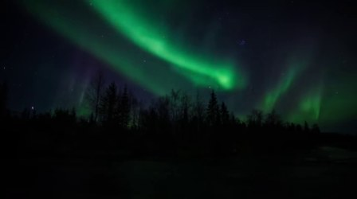 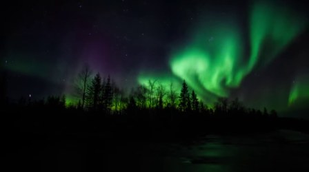 | 夜空中绿色极光在天空中舞动，下方是树林剪影 极光自然景观夜景户外动态星空 远景 · 夜晚 · 神秘、壮丽 · 极光在天空中移动和变化 | 0.24 技术 -0.091 美学 -0.033 VLM 5/5 | 低照度、偏糊 亮度 22 清晰 16 抖动 0.2 | 删除 1.1 美学模型 0.24（技术 -0.091 / 美学 -0.033）；VLM 精彩度 5/5（权重 20%）；画面偏糊（清晰度 16） |
| #18 镜头 6 | 1:57.0–2:01.3 4.2s | 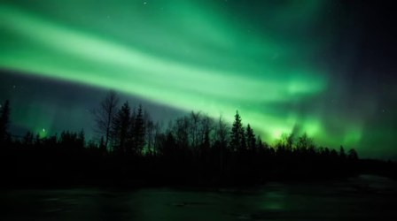 | 绿色极光在夜空中舞动，天空中呈现出绚丽的绿色光带。 极光自然景观夜景绿色天空自然风光 远景 · 夜晚 · 神秘、梦幻 · 极光在天空中移动和闪烁 | 0.41 技术 -0.072 美学 +0.028 VLM 5/5 | — 亮度 56 清晰 67 抖动 0.1 | 保留 ★入选 3.1 美学模型 0.41（技术 -0.072 / 美学 +0.028）；VLM 精彩度 5/5（权重 20%） |
| #19 镜头 7 | 2:01.3–2:04.2 3.0s | 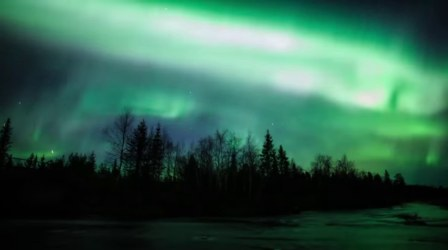 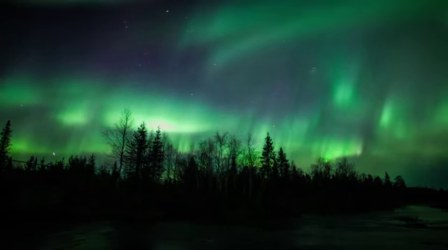 | 绿色极光在夜空中舞动，照亮了森林和河流 极光自然景观夜景绿色天空森林河流 全景 · 夜晚 · 神秘、壮丽 · 极光在天空中移动 | 0.32 技术 -0.078 美学 -0.004 VLM 5/5 | — 亮度 62 清晰 63 抖动 0.1 | 保留 2.8 美学模型 0.32（技术 -0.078 / 美学 -0.004）；VLM 精彩度 5/5（权重 20%） |
| #20 镜头 8 | 2:04.2–2:08.2 4.0s | 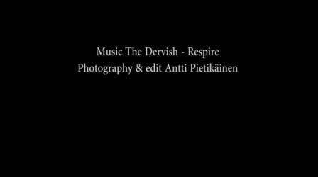 | 视频片段为黑屏文字信息 视频素材黑屏字幕信息音乐摄影 特写 · 夜晚 · 安静、专业 · 静止展示 | 0.44 技术 -0.049 美学 +0.020 VLM 1/5 | 低照度、抖动 亮度 2 清晰 760 抖动 68.6 | 删除 1.4 美学模型 0.44（技术 -0.049 / 美学 +0.020）；VLM 精彩度 1/5（权重 20%）；抖动明显 |
04_mbs_skypark.webm（18e16a82dbdc9c38）
0:16.7 · 59.94 fps · 有音轨 · 切点 0（硬切 0，叠化 0）· 镜头 1 · 片段 3 · 保留 3 · 切分耗时 6.44s
色条：绿色越深得分越高，红色为建议删除， 蓝框为入选建议时间线的片段。
建议时间线（4.0s / 目标 30s）
可用素材不足：去重后只凑到 4.0s，目标 30s
 1. 开场 4.0s
1. 开场 4.0s04_mbs_skypark.webm 0:06.3–0:10.3
夜晚的城市全景，高楼林立，灯火辉煌，水面上倒映着灯光，景色迷人。
得分 3.3，远景，城市夜景、高楼、城市
逐片段标签
| 片段 | 时间 | 关键帧 | 模型标签 | 美学分 / VLM 精彩度 | 画质信号 | 建议 |
|---|---|---|---|---|---|---|
| #0 镜头 0 | 0:00.0–0:05.6 5.6s |   | 夜晚的城市天际线，高楼林立，灯火辉煌，水面上倒映着璀璨的灯光。 城市夜景高楼灯光建筑城市风光夜景 远景 · 夜晚 · 繁华 · 镜头固定 | 0.52 技术 -0.059 美学 +0.062 VLM 4/5 | — 亮度 50 清晰 1253 抖动 0.7 | 保留 3.3 美学模型 0.52（技术 -0.059 / 美学 +0.062）；VLM 精彩度 4/5（权重 20%） |
| #1 镜头 0 | 0:05.6–0:11.1 5.6s |  | 夜晚的城市全景，高楼林立，灯火辉煌，水面上倒映着灯光，景色迷人。 城市夜景高楼城市灯光建筑夜景城市风光 远景 · 夜晚 · 繁华 · 镜头移动 | 0.46 技术 -0.065 美学 +0.045 VLM 5/5 | — 亮度 48 清晰 1110 抖动 0.6 | 保留 ★入选 3.3 美学模型 0.46（技术 -0.065 / 美学 +0.045）；VLM 精彩度 5/5（权重 20%） |
| #2 镜头 0 | 0:11.1–0:16.7 5.6s | 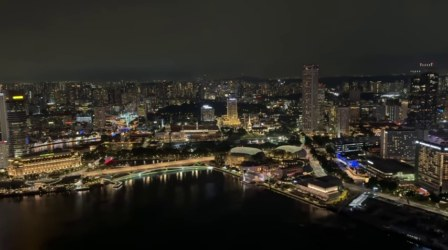 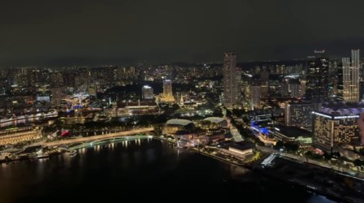 | 夜晚的城市航拍视角，灯火辉煌的滨海城市景观。 城市夜景航拍灯光都市建筑群河流 远景 · 夜晚 · 繁华 · 航拍镜头缓慢移动 | 0.46 技术 -0.057 美学 +0.035 VLM 4/5 | — 亮度 44 清晰 1044 抖动 0.2 | 保留 3.1 美学模型 0.46（技术 -0.057 / 美学 +0.035）；VLM 精彩度 4/5（权重 20%） |
05_mbs_gondola.webm（c951de956573afbc）
0:30.5 · 59.94 fps · 有音轨 · 切点 0（硬切 0，叠化 0）· 镜头 1 · 片段 4 · 保留 4 · 切分耗时 11.49s
色条：绿色越深得分越高，红色为建议删除， 蓝框为入选建议时间线的片段。
建议时间线（8.0s / 目标 30s）
可用素材不足：去重后只凑到 8.0s，目标 30s
 1. 开场 4.0s
1. 开场 4.0s05_mbs_gondola.webm 0:17.1–0:21.1
室内购物中心水道上，游客乘坐小船在水中游览。
得分 3.1，全景，室内水上乐园、购物中心、旅游景点
 2. 收尾 4.0s
2. 收尾 4.0s05_mbs_gondola.webm 0:01.8–0:05.8
商场水道上，红色小船在水中缓缓移动，岸边有行人驻足观看。
得分 2.9，远景，购物中心、水上小船、商业街
逐片段标签
| 片段 | 时间 | 关键帧 | 模型标签 | 美学分 / VLM 精彩度 | 画质信号 | 建议 |
|---|---|---|---|---|---|---|
| #0 镜头 0 | 0:00.0–0:07.6 7.6s |  | 商场水道上，红色小船在水中缓缓移动，岸边有行人驻足观看。 购物中心水上小船商业街休闲活动水道购物城市景观 远景 · 白天 · 悠闲、宁静 · 小船在水道中行驶，岸边的人群在观望 | 0.48 技术 -0.057 美学 +0.043 VLM 3/5 | — 亮度 101 清晰 906 抖动 9.6 | 保留 ★入选 2.9 美学模型 0.48（技术 -0.057 / 美学 +0.043）；VLM 精彩度 3/5（权重 20%） |
| #1 镜头 0 | 0:07.6–0:15.3 7.6s |   | 室内购物中心的河道上，一艘小船载着游客在水面上缓缓前行。 室内场景水上观光购物中心游船游客休闲 中景 · 白天 · 悠闲 · 小船在水中前进 | 0.47 技术 -0.050 美学 +0.036 VLM 3/5 | — 亮度 94 清晰 1064 抖动 0.8 | 保留 2.9 美学模型 0.47（技术 -0.050 / 美学 +0.036）；VLM 精彩度 3/5（权重 20%） |
| #2 镜头 0 | 0:15.3–0:22.9 7.6s |  | 室内购物中心水道上，游客乘坐小船在水中游览。 室内水上乐园购物中心旅游景点水上观光购物商场 全景 · 白天 · 休闲 · 乘坐小船在水道中行驶 | 0.47 技术 -0.058 美学 +0.040 VLM 4/5 | — 亮度 101 清晰 1104 抖动 1.8 | 保留 ★入选 3.1 美学模型 0.47（技术 -0.058 / 美学 +0.040）；VLM 精彩度 4/5（权重 20%） |
| #3 镜头 0 | 0:22.9–0:30.5 7.6s |   | 室内购物中心水池中，人们乘坐小船在水上游玩。 室内水上乐园购物中心儿童游乐水上游乐设施家庭出游 全景 · 白天 · 休闲、欢乐 · 乘坐小船在水中漂浮 | 0.43 技术 -0.062 美学 +0.029 VLM 4/5 | — 亮度 105 清晰 1184 抖动 0.4 | 保留 3.0 美学模型 0.43（技术 -0.062 / 美学 +0.029）；VLM 精彩度 4/5（权重 20%） |
06_shanghai_24h_vlog.webm（2c36abc81b285d57）（只分析前 300 秒，全长 19:37.7）
5:00.0 · 24.00 fps · 有音轨 · 切点 57（硬切 57，叠化 0）· 镜头 56 · 片段 70 · 保留 55 · 切分耗时 58.1s
色条：绿色越深得分越高，红色为建议删除， 蓝框为入选建议时间线的片段。
建议时间线（32.54s / 目标 30s）
 1. 开场 4.0s
1. 开场 4.0s06_shanghai_24h_vlog.web 2:40.6–2:44.6
城市街道上，一辆摩托车在斑马线前停下，背景是高楼大厦。
得分 3.7，远景，城市街景、动画电影、摩托车
2. 主体 3.0s06_shanghai_24h_vlog.web 0:16.0–0:19.0
一位年轻女性在阳光明媚的上海外滩向观众打招呼。
得分 3.9，中景，旅游、上海、外滩
3. 主体 4.0s06_shanghai_24h_vlog.web 0:39.6–0:43.6
一位女性在河边对着镜头微笑，背景是上海的城市天际线。
得分 4.0，中景，旅行、城市风光、美女
 4. 主体 4.0s
4. 主体 4.0s06_shanghai_24h_vlog.web 1:20.9–1:24.9
一对男女在城市街道上行走，准备去The Bund，背景有公交车和街景。
得分 3.8，中景，城市街景、情侣出行、旅行
5. 主体 2.4s06_shanghai_24h_vlog.web 3:05.6–3:08.0
女子在户外向镜头挥手微笑，背景是上海的城市天际线。
得分 3.9，中景，女子、城市风光、上海
6. 主体 4.0s06_shanghai_24h_vlog.web 3:46.1–3:50.1
女子在河边码头上对着镜头说话，背景是上海的城市天际线。
得分 3.9，中景，城市风光、旅游、女性
 7. 主体 3.1s
7. 主体 3.1s06_shanghai_24h_vlog.web 4:03.8–4:06.8
女子在江边码头行走，背景是上海标志性建筑群。
得分 3.7，中景，城市风光、江边、女性
8. 主体 4.0s06_shanghai_24h_vlog.web 4:11.8–4:15.8
一位女子在河边的户外场景中，手持雨伞，从微笑到说话。
得分 3.8，近景，户外、女子、雨伞
 9. 收尾 4.0s
9. 收尾 4.0s06_shanghai_24h_vlog.web 1:28.8–1:32.8
城市街角交叉路口，车辆在斑马线前等待或行驶。
得分 3.4，远景，街景、城市交通、斑马线
逐片段标签
| 片段 | 时间 | 关键帧 | 模型标签 | 美学分 / VLM 精彩度 | 画质信号 | 建议 |
|---|---|---|---|---|---|---|
| #0 镜头 0 | 0:00.0–0:02.8 2.8s |   | 一位女士在户外码头向镜头打招呼，背景是上海城市天际线。 城市风光旅游户外女性打招呼上海 中景 · 白天 · 轻松愉快 · 站立、挥手 | 0.67 技术 -0.028 美学 +0.097 VLM 4/5 | — 亮度 103 清晰 622 抖动 2.1 | 保留 3.7 美学模型 0.67（技术 -0.028 / 美学 +0.097）；VLM 精彩度 4/5（权重 20%） |
| #1 镜头 1 | 0:02.8–0:04.1 1.3s |  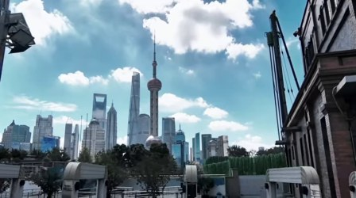 | 上海城市天际线与现代建筑群在蓝天白云下展现，前景为欧式风格建筑。 上海天际线建筑城市风光现代都市天空 远景 · 白天 · 宁静 · 镜头固定 | 0.65 技术 -0.051 美学 +0.107 VLM 3/5 | — 亮度 130 清晰 1021 抖动 2.9 | 保留 3.0 美学模型 0.65（技术 -0.051 / 美学 +0.107）；VLM 精彩度 3/5（权重 20%）；时长仅 1.3s |
| #2 镜头 2 | 0:04.1–0:05.5 1.4s |  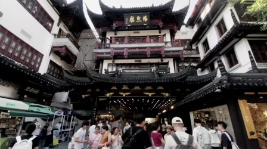 | 古色古香的中式建筑群，人群在热闹的街市中穿行。 古建筑街市人群旅游景点城市风光 全景 · 白天 · 繁华 · 行走 | 0.37 技术 -0.055 美学 -0.002 VLM 4/5 | — 亮度 81 清晰 1825 抖动 0.9 | 保留 2.3 美学模型 0.37（技术 -0.055 / 美学 -0.002）；VLM 精彩度 4/5（权重 20%）；时长仅 1.4s |
| #3 镜头 3 | 0:05.5–0:08.6 3.1s |   | 夜晚城市街道上，一辆白色跑车在人行横道前行驶，背景是灯火通明的夜市。 夜景跑车城市街景夜间交通街头生活 中景 · 夜晚 · 繁华热闹 · 车辆行驶 | 0.50 技术 -0.056 美学 +0.052 VLM 4/5 | — 亮度 80 清晰 903 抖动 8.5 | 保留 3.2 美学模型 0.50（技术 -0.056 / 美学 +0.052）；VLM 精彩度 4/5（权重 20%） |
| #4 镜头 4 | 0:08.6–0:10.2 1.5s |  | 夜市小吃摊位上，厨师们正在忙碌地准备和售卖食物。 夜市小吃摊美食街头厨师烹饪热闹 中景 · 夜晚 · 热闹、繁忙 · 烹饪和售卖食物 | 0.56 技术 -0.056 美学 +0.074 VLM 4/5 | 抖动 亮度 90 清晰 2662 抖动 15.9 | 保留 2.4 美学模型 0.56（技术 -0.056 / 美学 +0.074）；VLM 精彩度 4/5（权重 20%）；抖动明显 |
| #5 镜头 5 | 0:10.2–0:13.1 3.0s |   | 一位女子在街头小吃摊前用手机自拍，手持烤串。 街头美食自拍夜市小吃摊城市生活 中景 · 白天 · 轻松愉快 · 拍摄 | 0.61 技术 -0.051 美学 +0.090 VLM 4/5 | 抖动 亮度 82 清晰 978 抖动 27.0 | 保留 2.5 美学模型 0.61（技术 -0.051 / 美学 +0.090）；VLM 精彩度 4/5（权重 20%）；抖动明显 |
| #6 镜头 6 | 0:13.1–0:14.5 1.3s |  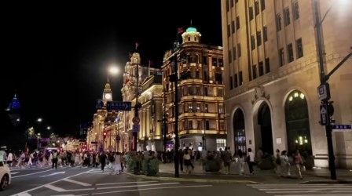 | 夜晚的城市街道，行人熙攘，建筑灯火辉煌。 夜景城市街道建筑人群灯光街景 远景 · 夜晚 · 繁华 · 行走 | 0.52 技术 -0.045 美学 +0.052 VLM 4/5 | — 亮度 58 清晰 1234 抖动 0.5 | 保留 2.8 美学模型 0.52（技术 -0.045 / 美学 +0.052）；VLM 精彩度 4/5（权重 20%）；时长仅 1.3s |
| #7 镜头 7 | 0:14.5–0:16.0 1.5s |  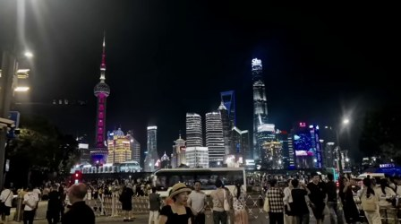 | 夜晚的城市天际线和人群 城市夜景上海天际线地标建筑人群夜间 远景 · 夜晚 · 繁华 · 静止 | 0.48 技术 -0.060 美学 +0.047 VLM 4/5 | 低照度 亮度 38 清晰 1309 抖动 1.1 | 保留 3.1 美学模型 0.48（技术 -0.060 / 美学 +0.047）；VLM 精彩度 4/5（权重 20%） |
| #8 镜头 8 | 0:16.0–0:19.0 3.0s |  | 一位年轻女性在阳光明媚的上海外滩向观众打招呼。 旅游上海外滩女性视频剪辑欢迎 中景 · 白天 · 愉快、友好 · 微笑面对镜头 | 0.73 技术 -0.038 美学 +0.133 VLM 4/5 | — 亮度 131 清晰 1959 抖动 6.6 | 保留 ★入选 3.9 美学模型 0.73（技术 -0.038 / 美学 +0.133）；VLM 精彩度 4/5（权重 20%） |
| #9 镜头 9 | 0:19.0–0:25.2 6.2s |   | 一位女性在河边对着镜头说话，背景是上海的城市天际线。 旅行城市风光女性户外自然光视频素材 中景 · 白天 · 愉快 · 讲话 | 0.67 技术 -0.036 美学 +0.103 VLM 4/5 | — 亮度 126 清晰 1437 抖动 1.6 | 保留 3.7 美学模型 0.67（技术 -0.036 / 美学 +0.103）；VLM 精彩度 4/5（权重 20%） |
| #10 镜头 10 | 0:25.2–0:30.0 4.7s |   | 上海外滩街景，行人和车辆在白天的街道上活动。 上海外滩街景城市生活行人交通标志 中景 · 白天 · 悠闲 · 行走 | 0.39 技术 -0.081 美学 +0.026 VLM 3/5 | 抖动 亮度 110 清晰 1880 抖动 46.7 | 删除 1.6 美学模型 0.39（技术 -0.081 / 美学 +0.026）；VLM 精彩度 3/5（权重 20%）；抖动明显 |
| #11 镜头 11 | 0:30.0–0:33.6 3.6s |   | 江南水乡古镇的古朴建筑和小船 古镇水乡古建筑小船江南风光慢镜头 中景 · 白天 · 宁静祥和 · 静止 | 0.49 技术 -0.041 美学 +0.033 VLM 3/5 | — 亮度 128 清晰 1658 抖动 4.4 | 保留 3.0 美学模型 0.49（技术 -0.041 / 美学 +0.033）；VLM 精彩度 3/5（权重 20%） |
| #12 镜头 12 | 0:33.6–0:37.6 4.0s |   | 城市街道上，一名骑红色自行车的人在绿树成荫的道路上行驶。 城市街景骑行绿树成荫日常出行街道 中景 · 白天 · 宁静 · 骑行 | 0.40 技术 -0.078 美学 +0.029 VLM 3/5 | — 亮度 116 清晰 2472 抖动 4.9 | 保留 2.7 美学模型 0.40（技术 -0.078 / 美学 +0.029）；VLM 精彩度 3/5（权重 20%） |
| #13 镜头 13 | 0:37.6–0:39.0 1.5s |  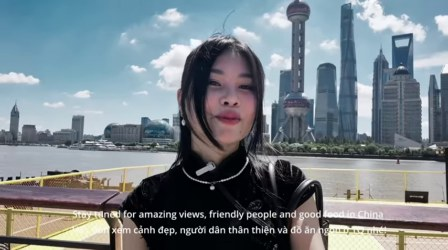 | 一位女性在河边的观景台上对着镜头说话，背景是上海的标志性建筑。 旅行城市风光女性上海旅游景点自然景观 中景 · 白天 · 轻松愉快 · 人物面对镜头说话 | 0.71 技术 -0.032 美学 +0.118 VLM 4/5 | — 亮度 127 清晰 1710 抖动 0.6 | 保留 3.4 美学模型 0.71（技术 -0.032 / 美学 +0.118）；VLM 精彩度 4/5（权重 20%）；时长仅 1.5s |
| #14 镜头 14 | 0:39.0–0:44.1 5.1s |  | 一位女性在河边对着镜头微笑，背景是上海的城市天际线。 旅行城市风光美女视频素材上海 中景 · 白天 · 愉快、积极 · 女子面对镜头微笑 | 0.74 技术 -0.032 美学 +0.131 VLM 4/5 | — 亮度 128 清晰 1769 抖动 0.8 | 保留 ★入选 4.0 美学模型 0.74（技术 -0.032 / 美学 +0.131）；VLM 精彩度 4/5（权重 20%） |
| #15 镜头 15 | 0:44.1–0:48.8 4.7s |   | 手持一张公交票券，背景是停靠在站台的公交车。 公交车票券站台夜间出行 特写 · 夜晚 · 平静 · 展示和持有 | 0.58 技术 -0.045 美学 +0.074 VLM 3/5 | — 亮度 78 清晰 544 抖动 10.2 | 保留 3.3 美学模型 0.58（技术 -0.045 / 美学 +0.074）；VLM 精彩度 3/5（权重 20%） |
| #16 镜头 16 | 0:48.8–0:54.3 5.5s |   | 公交车内，乘客在等车，其中一人手持手机。 公共交通公交车乘客旅行移动 中景 · 白天 · 日常 · 站立、等待、使用手机 | 0.44 技术 -0.062 美学 +0.033 VLM 3/5 | — 亮度 83 清晰 847 抖动 1.5 | 保留 2.8 美学模型 0.44（技术 -0.062 / 美学 +0.033）；VLM 精彩度 3/5（权重 20%） |
| #17 镜头 17 | 0:54.3–1:00.1 5.8s |   | 夜晚街边，女子从酒店门口走向FamilyMart买零食。 街边夜景女性购物城市生活移动 中景 · 夜晚 · 日常 · 行走 | 0.48 技术 -0.065 美学 +0.052 VLM 3/5 | — 亮度 91 清晰 1403 抖动 2.0 | 保留 3.0 美学模型 0.48（技术 -0.065 / 美学 +0.052）；VLM 精彩度 3/5（权重 20%） |
| #18 镜头 17 | 1:00.1–1:05.8 5.8s |   | 一位女性从酒店走出，走向FamilyMart超市购物。 购物女性超市夜间生活场景人物动作 中景 · 夜晚 · 日常 · 行走、进入超市 | 0.49 技术 -0.067 美学 +0.055 VLM 3/5 | 抖动 亮度 111 清晰 982 抖动 58.2 | 删除 2.0 美学模型 0.49（技术 -0.067 / 美学 +0.055）；VLM 精彩度 3/5（权重 20%）；抖动明显 |
| #19 镜头 18 | 1:05.8–1:09.0 3.2s |   | 一位女性在快餐店的食品展示柜前驻足，看到美食后惊喜地捂住嘴。 美食惊讶女性快餐店零食食物展示柜 中景 · 白天 · 惊喜 · 观看和惊讶 | 0.65 技术 -0.041 美学 +0.099 VLM 4/5 | — 亮度 104 清晰 642 抖动 3.4 | 保留 3.7 美学模型 0.65（技术 -0.041 / 美学 +0.099）；VLM 精彩度 4/5（权重 20%） |
| #20 镜头 19 | 1:09.0–1:11.6 2.6s |   | 夜晚街头，一对年轻情侣手持食物和水瓶，面带笑容。 情侣街头美食夜生活微笑日常记录 中景 · 夜晚 · 愉快、温馨 · 展示食物和水瓶 | 0.53 技术 -0.072 美学 +0.076 VLM 4/5 | 偏糊、抖动 亮度 80 清晰 182 抖动 12.5 | 删除 0.8 美学模型 0.53（技术 -0.072 / 美学 +0.076）；VLM 精彩度 4/5（权重 20%）；画面偏糊（清晰度 182）；抖动明显 |
| #21 镜头 20 | 1:11.6–1:16.2 4.6s |   | 一对男女在镜子前对着手机自拍，背景是办公室环境。 自拍情侣早晨办公室视频素材 中景 · 白天 · 轻松愉快 · 自拍 | 0.48 技术 -0.046 美学 +0.036 VLM 4/5 | 抖动 亮度 100 清晰 492 抖动 30.5 | 保留 2.1 美学模型 0.48（技术 -0.046 / 美学 +0.036）；VLM 精彩度 4/5（权重 20%）；抖动明显 |
| #22 镜头 21 | 1:16.2–1:17.5 1.2s |  | 一对男女在镜子前自拍，男子手持手机，两人面带微笑。 情侣自拍室内微笑时尚 中景 · 白天 · 轻松愉快 · 自拍 | 0.55 技术 -0.042 美学 +0.061 VLM 4/5 | 偏糊 亮度 128 清晰 306 抖动 0.4 | 删除 1.4 美学模型 0.55（技术 -0.042 / 美学 +0.061）；VLM 精彩度 4/5（权重 20%）；画面偏糊（清晰度 306）；时长仅 1.2s |
| #23 镜头 22 | 1:17.5–1:20.9 3.4s |   | 一对男女在镜子前自拍，记录美好瞬间。 情侣自拍镜子室内日常 中景 · 白天 · 温馨 · 自拍 | 0.55 技术 -0.043 美学 +0.059 VLM 4/5 | 偏糊、抖动 亮度 83 清晰 275 抖动 37.5 | 删除 0.8 美学模型 0.55（技术 -0.043 / 美学 +0.059）；VLM 精彩度 4/5（权重 20%）；画面偏糊（清晰度 275）；抖动明显 |
| #24 镜头 23 | 1:20.9–1:24.9 4.0s |  | 一对男女在城市街道上行走，准备去The Bund，背景有公交车和街景。 城市街景情侣出行旅行街头日常户外活动 中景 · 白天 · 轻松愉快 · 行走、挥手 | 0.67 技术 -0.041 美学 +0.110 VLM 4/5 | — 亮度 82 清晰 1199 抖动 7.0 | 保留 ★入选 3.8 美学模型 0.67（技术 -0.041 / 美学 +0.110）；VLM 精彩度 4/5（权重 20%） |
| #25 镜头 24 | 1:24.9–1:27.6 2.8s |   | 一对男女在城市街道上行走，镜头聚焦于他们的面部特写。 城市漫步街头生活情侣街景日常记录 近景 · 白天 · 轻松、日常 · 行走、调整头发 | 0.49 技术 -0.070 美学 +0.058 VLM 3/5 | 抖动 亮度 108 清晰 1249 抖动 22.2 | 删除 2.0 美学模型 0.49（技术 -0.070 / 美学 +0.058）；VLM 精彩度 3/5（权重 20%）；抖动明显 |
| #26 镜头 25 | 1:27.6–1:34.0 6.4s |  | 城市街角交叉路口，车辆在斑马线前等待或行驶。 街景城市交通斑马线建筑日间都市生活 远景 · 白天 · 宁静 · 车辆和行人在路口活动 | 0.63 技术 -0.054 美学 +0.100 VLM 3/5 | — 亮度 102 清晰 1580 抖动 2.1 | 保留 ★入选 3.4 美学模型 0.63（技术 -0.054 / 美学 +0.100）；VLM 精彩度 3/5（权重 20%） |
| #27 镜头 26 | 1:34.0–1:38.1 4.1s |   | 一对男女在街边交谈，女子侧脸，男子手持雨伞。 街边男女对话雨伞城市生活 中景 · 白天 · 轻松、日常 · 对话 | 0.54 技术 -0.064 美学 +0.074 VLM 3/5 | — 亮度 91 清晰 1559 抖动 6.8 | 保留 3.1 美学模型 0.54（技术 -0.064 / 美学 +0.074）；VLM 精彩度 3/5（权重 20%） |
| #28 镜头 26 | 1:38.1–1:42.2 4.1s |   | 女子在街头被风吹得头发凌乱，与身旁男子一同微笑。 街头情侣微笑风吹城市生活日常 中景 · 白天 · 轻松愉快 · 行走 | 0.56 技术 -0.066 美学 +0.081 VLM 4/5 | 抖动 亮度 104 清晰 1117 抖动 22.2 | 保留 2.4 美学模型 0.56（技术 -0.066 / 美学 +0.081）；VLM 精彩度 4/5（权重 20%）；抖动明显 |
| #29 镜头 27 | 1:42.2–1:48.0 5.8s |   | 城市街道上车辆行驶，镜头从左向右移动，展示上海街景。 城市街景交通现代建筑动态画面都市生活 远景 · 白天 · 平静 · 镜头水平移动 | 0.43 技术 -0.070 美学 +0.034 VLM 4/5 | 抖动 亮度 125 清晰 2550 抖动 21.0 | 删除 2.0 美学模型 0.43（技术 -0.070 / 美学 +0.034）；VLM 精彩度 4/5（权重 20%）；抖动明显 |
| #30 镜头 27 | 1:48.0–1:53.8 5.8s |   | 城市街道上车辆行驶，远处可见上海标志性建筑。 城市街景交通建筑上海旅行美食探索 远景 · 白天 · 现代都市感 · 镜头从街道一侧平移至另一侧，展示城市景观 | 0.46 技术 -0.074 美学 +0.049 VLM 4/5 | 抖动 亮度 98 清晰 1677 抖动 12.1 | 保留 2.1 美学模型 0.46（技术 -0.074 / 美学 +0.049）；VLM 精彩度 4/5（权重 20%）；抖动明显 |
| #31 镜头 28 | 1:53.8–1:56.2 2.4s |   | 城市建筑群的天空视角，包含东方明珠和上海中心等标志性建筑。 城市景观地标建筑天空旅游自然光 远景 · 白天 · 宁静 · 镜头固定 | 0.59 技术 -0.059 美学 +0.087 VLM 3/5 | — 亮度 84 清晰 1548 抖动 1.2 | 保留 3.3 美学模型 0.59（技术 -0.059 / 美学 +0.087）；VLM 精彩度 3/5（权重 20%） |
| #32 镜头 29 | 1:56.2–2:00.8 4.5s |   | 一辆白色婚礼轿车在城市街道上行驶，车头装饰着花束。 婚礼用车城市街景婚车装饰花束婚礼汽车 中景 · 白天 · 浪漫 · 车辆行驶 | 0.43 技术 -0.087 美学 +0.050 VLM 4/5 | — 亮度 99 清晰 1538 抖动 7.6 | 保留 3.0 美学模型 0.43（技术 -0.087 / 美学 +0.050）；VLM 精彩度 4/5（权重 20%） |
| #33 镜头 30 | 2:00.8–2:07.1 6.3s |   | 城市街道上，一辆白色轿车和行人、车辆在移动。 城市街景婚礼车辆交通都市生活动态画面 中景 · 白天 · 日常 · 行驶 | 0.34 技术 -0.113 美学 +0.032 VLM 3/5 | — 亮度 95 清晰 3064 抖动 6.4 | 保留 2.5 美学模型 0.34（技术 -0.113 / 美学 +0.032）；VLM 精彩度 3/5（权重 20%） |
| #34 镜头 30 | 2:07.1–2:13.4 6.3s |   | 一位厨师在餐厅玻璃窗前准备食物，窗外是街景。 厨房美食厨师餐厅街景食物烹饪 中景 · 白天 · 忙碌 · 厨师在处理食材 | 0.36 技术 -0.084 美学 +0.018 VLM 3/5 | 抖动 亮度 109 清晰 1506 抖动 35.1 | 删除 1.6 美学模型 0.36（技术 -0.084 / 美学 +0.018）；VLM 精彩度 3/5（权重 20%）；抖动明显 |
| #35 镜头 31 | 2:13.4–2:16.7 3.3s |   | 一名女子在城市街道上，背景是密集的共享电动摩托车。 城市街景共享电动摩托车女性街头生活视频素材 中景 · 白天 · 平静、日常 · 镜头从近景缓慢拉远，展示更多环境和人物 | 0.48 技术 -0.062 美学 +0.047 VLM 4/5 | — 亮度 90 清晰 1197 抖动 7.7 | 保留 3.1 美学模型 0.48（技术 -0.062 / 美学 +0.047）；VLM 精彩度 4/5（权重 20%） |
| #36 镜头 32 | 2:16.7–2:20.6 4.0s |   | 城市街道上空有大量公共电动滑板车，路边指示牌显示多条路线。 城市街景公共电动滑板车交通指示牌街道日间 远景 · 白天 · 宁静 · 镜头缓慢移动 | 0.48 技术 -0.071 美学 +0.055 VLM 3/5 | — 亮度 100 清晰 2363 抖动 2.8 | 保留 2.9 美学模型 0.48（技术 -0.071 / 美学 +0.055）；VLM 精彩度 3/5（权重 20%） |
| #37 镜头 33 | 2:20.6–2:26.8 6.2s |   | 一条蜿蜒的小径穿过绿树成荫的公园，旁边有长廊和木凳。 公园自然景观小径绿树长廊木凳静谧 中景 · 白天 · 宁静 · 镜头缓慢移动拍摄 | 0.29 技术 -0.076 美学 -0.019 VLM 3/5 | — 亮度 100 清晰 2089 抖动 4.0 | 保留 2.3 美学模型 0.29（技术 -0.076 / 美学 -0.019）；VLM 精彩度 3/5（权重 20%） |
| #38 镜头 34 | 2:26.8–2:33.6 6.8s |   | 视频片段展示了一棵疑似南瓜树的植物，字幕提示观众识别它。 植物识别南瓜树户外场景自然观察字幕提示 近景 · 白天 · 好奇 · 镜头聚焦于植物特写 | 0.39 技术 -0.081 美学 +0.028 VLM 3/5 | 抖动 亮度 105 清晰 1514 抖动 56.3 | 删除 1.6 美学模型 0.39（技术 -0.081 / 美学 +0.028）；VLM 精彩度 3/5（权重 20%）；抖动明显 |
| #39 镜头 34 | 2:33.6–2:40.5 6.8s |   | 公园小径与城市街道的对比场景 自然景观城市街景户外活动城市生活公园小径镜头移动 中景 · 白天 · 宁静与都市对比 · 镜头从公园小径平移至城市街道 | 0.34 技术 -0.073 美学 +0.001 VLM 4/5 | 抖动 亮度 110 清晰 2016 抖动 25.0 | 删除 1.7 美学模型 0.34（技术 -0.073 / 美学 +0.001）；VLM 精彩度 4/5（权重 20%）；抖动明显 |
| #40 镜头 35 | 2:40.5–2:44.7 4.2s |  | 城市街道上，一辆摩托车在斑马线前停下，背景是高楼大厦。 城市街景动画电影摩托车交通信号灯高楼大厦 远景 · 白天 · 宁静 · 摩托车停在路边 | 0.71 技术 -0.038 美学 +0.122 VLM 3/5 | — 亮度 130 清晰 2033 抖动 2.4 | 保留 ★入选 3.7 美学模型 0.71（技术 -0.038 / 美学 +0.122）；VLM 精彩度 3/5（权重 20%） |
| #41 镜头 35 | 2:44.7–2:48.9 4.2s |   | 城市街道上，一辆摩托车驶过人行横道，背景是高楼和交通信号灯。 动画电影城市街景交通信号灯摩托车人行横道 中景 · 白天 · 宁静 · 摩托车行驶 | 0.72 技术 -0.032 美学 +0.121 VLM 3/5 | — 亮度 128 清晰 1771 抖动 1.8 | 保留 3.7 美学模型 0.72（技术 -0.032 / 美学 +0.121）；VLM 精彩度 3/5（权重 20%） |
| #42 镜头 36 | 2:48.9–2:54.5 5.6s |   | 城市街景中，一座建于1926年的建筑与现代高楼形成对比。 建筑城市景观历史建筑现代都市交通信号灯复古风格 远景 · 白天 · 宁静 · 镜头从远景逐渐拉近到特写 | 0.47 技术 -0.078 美学 +0.058 VLM 4/5 | 抖动 亮度 144 清晰 2676 抖动 14.5 | 保留 2.1 美学模型 0.47（技术 -0.078 / 美学 +0.058）；VLM 精彩度 4/5（权重 20%）；抖动明显 |
| #43 镜头 36 | 2:54.5–3:00.1 5.6s |   | 视频片段展示了从一座建于1926年的老建筑到现代都市天际线的对比，呈现了城市变迁。 城市变迁建筑对比历史与现代视频素材城市景观 远景 · 白天 · 对比、现代感 · 镜头切换 | 0.50 技术 -0.072 美学 +0.063 VLM 4/5 | 抖动 亮度 133 清晰 1651 抖动 21.6 | 保留 2.2 美学模型 0.50（技术 -0.072 / 美学 +0.063）；VLM 精彩度 4/5（权重 20%）；抖动明显 |
| #44 镜头 36 | 3:00.1–3:05.6 5.6s |   | 视频片段展示了上海虹口港泵闸的保护公示牌和城市天际线。 城市景观建筑公示牌上海地标视频素材 远景 · 白天 · 现代、开阔 · 镜头从左向右移动，展示不同角度的城市景象 | 0.53 技术 -0.070 美学 +0.074 VLM 4/5 | — 亮度 118 清晰 1080 抖动 7.6 | 保留 3.3 美学模型 0.53（技术 -0.070 / 美学 +0.074）；VLM 精彩度 4/5（权重 20%） |
| #45 镜头 37 | 3:05.6–3:08.0 2.4s |  | 女子在户外向镜头挥手微笑，背景是上海的城市天际线。 女子城市风光上海户外微笑自拍 中景 · 白天 · 愉快、友好 · 挥手微笑 | 0.70 技术 -0.042 美学 +0.124 VLM 4/5 | — 亮度 138 清晰 1189 抖动 6.6 | 保留 ★入选 3.9 美学模型 0.70（技术 -0.042 / 美学 +0.124）；VLM 精彩度 4/5（权重 20%） |
| #46 镜头 38 | 3:08.0–3:11.1 3.1s |   | 一对男女在户外自拍，背景是上海的城市天际线。 情侣城市风光自拍上海户外旅游 中景 · 白天 · 愉快 · 自拍 | 0.57 技术 -0.063 美学 +0.084 VLM 4/5 | 抖动 亮度 131 清晰 1146 抖动 23.7 | 保留 2.4 美学模型 0.57（技术 -0.063 / 美学 +0.084）；VLM 精彩度 4/5（权重 20%）；抖动明显 |
| #47 镜头 39 | 3:11.1–3:14.2 3.1s |   | 一对情侣在城市天际线下自拍，男子亲吻女子脸颊。 情侣城市风景自拍浪漫爱情都市 中景 · 白天 · 浪漫 · 自拍 | 0.60 技术 -0.052 美学 +0.089 VLM 4/5 | — 亮度 136 清晰 1288 抖动 2.2 | 保留 3.5 美学模型 0.60（技术 -0.052 / 美学 +0.089）；VLM 精彩度 4/5（权重 20%） |
| #48 镜头 40 | 3:14.2–3:18.7 4.4s |   | 城市街道上，一名骑车人与行人互动，背景是现代化建筑和天空。 城市街景现代建筑交通日常都市生活 远景 · 白天 · 宁静 · 骑行中与行人互动 | 0.57 技术 -0.056 美学 +0.079 VLM 3/5 | — 亮度 114 清晰 1304 抖动 3.0 | 保留 3.2 美学模型 0.57（技术 -0.056 / 美学 +0.079）；VLM 精彩度 3/5（权重 20%） |
| #49 镜头 40 | 3:18.7–3:23.1 4.4s |   | 城市街景中，行人与车辆在现代化建筑间穿行。 城市街景现代建筑行人车辆都市生活 远景 · 白天 · 宁静 · 行走 | 0.57 技术 -0.071 美学 +0.090 VLM 3/5 | — 亮度 119 清晰 1387 抖动 5.2 | 保留 3.2 美学模型 0.57（技术 -0.071 / 美学 +0.090）；VLM 精彩度 3/5（权重 20%） |
| #50 镜头 41 | 3:23.1–3:28.7 5.6s |   | 一个行人从室外走向地下通道，通道内有壁画和远处的街景。 城市地下通道行人壁画街景日常 中景 · 白天 · 宁静 · 行走 | 0.30 技术 -0.103 美学 +0.007 VLM 3/5 | 抖动 亮度 102 清晰 670 抖动 24.6 | 删除 1.4 美学模型 0.30（技术 -0.103 / 美学 +0.007）；VLM 精彩度 3/5（权重 20%）；抖动明显 |
| #51 镜头 41 | 3:28.7–3:34.2 5.6s |   | 一个男人在地下通道外行走，远处是上海城市天际线。 城市景观行人地下通道上海天际线户外建筑 远景 · 白天 · 宁静 · 行走 | 0.24 技术 -0.119 美学 -0.008 VLM 3/5 | 抖动 亮度 92 清晰 972 抖动 20.9 | 删除 1.2 美学模型 0.24（技术 -0.119 / 美学 -0.008）；VLM 精彩度 3/5（权重 20%）；抖动明显 |
| #52 镜头 42 | 3:34.2–3:41.3 7.1s |   | 上海城市景观，远处是标志性建筑群，近处有行人和遮阳伞。 城市景观上海建筑群街景行人天气晴朗 远景 · 白天 · 宁静 · 镜头移动 | 0.53 技术 -0.066 美学 +0.072 VLM 4/5 | — 亮度 108 清晰 1402 抖动 2.5 | 保留 3.3 美学模型 0.53（技术 -0.066 / 美学 +0.072）；VLM 精彩度 4/5（权重 20%） |
| #53 镜头 43 | 3:41.3–3:45.5 4.1s |   | 一位女士在晴天的城市广场上行走，背景是上海标志性建筑。 城市风光上海女性户外现代建筑晴天 中景 · 白天 · 明亮、活力 · 行走 | 0.58 技术 -0.046 美学 +0.074 VLM 4/5 | — 亮度 130 清晰 690 抖动 1.0 | 保留 3.4 美学模型 0.58（技术 -0.046 / 美学 +0.074）；VLM 精彩度 4/5（权重 20%） |
| #54 镜头 44 | 3:45.5–3:50.8 5.4s |  | 女子在河边码头上对着镜头说话，背景是上海的城市天际线。 城市风光旅游女性户外视频素材上海 中景 · 白天 · 愉快 · 站立、说话 | 0.72 技术 -0.028 美学 +0.120 VLM 4/5 | — 亮度 132 清晰 3134 抖动 0.3 | 保留 ★入选 3.9 美学模型 0.72（技术 -0.028 / 美学 +0.120）；VLM 精彩度 4/5（权重 20%） |
| #55 镜头 45 | 3:50.8–3:53.2 2.4s |  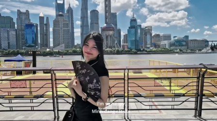 | 女子在河边的观景台上开心地展示着扇子。 城市风光旅游女性开心户外风景 中景 · 白天 · 愉悦 · 站立，手持扇子 | 0.70 技术 -0.033 美学 +0.116 VLM 4/5 | — 亮度 132 清晰 2657 抖动 0.6 | 保留 3.9 美学模型 0.70（技术 -0.033 / 美学 +0.116）；VLM 精彩度 4/5（权重 20%） |
| #56 镜头 46 | 3:53.2–3:58.5 5.3s |  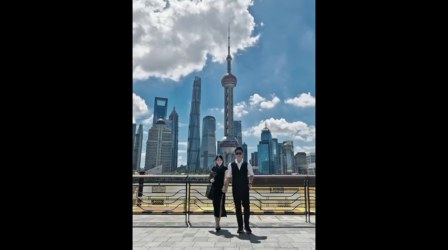 | 一对情侣在城市天际线前的桥上合影 情侣城市风光户外旅行打卡都市风景 远景 · 白天 · 浪漫 · 站立和行走 | 0.41 技术 -0.055 美学 +0.016 VLM 4/5 | — 亮度 57 清晰 746 抖动 0.2 | 保留 2.9 美学模型 0.41（技术 -0.055 / 美学 +0.016）；VLM 精彩度 4/5（权重 20%） |
| #57 镜头 46 | 3:58.5–4:03.8 5.3s |   | 一对情侣在城市天际线下手牵手行走 情侣城市风景爱情户外都市浪漫 中景 · 白天 · 浪漫 · 牵手行走 | 0.40 技术 -0.065 美学 +0.018 VLM 4/5 | — 亮度 54 清晰 579 抖动 0.1 | 保留 2.9 美学模型 0.40（技术 -0.065 / 美学 +0.018）；VLM 精彩度 4/5（权重 20%） |
| #58 镜头 47 | 4:03.8–4:06.8 3.1s |  | 女子在江边码头行走，背景是上海标志性建筑群。 城市风光江边女性行走上海风景 中景 · 白天 · 悠闲 · 行走 | 0.67 技术 -0.038 美学 +0.104 VLM 4/5 | — 亮度 136 清晰 3269 抖动 1.2 | 保留 ★入选 3.7 美学模型 0.67（技术 -0.038 / 美学 +0.104）；VLM 精彩度 4/5（权重 20%） |
| #59 镜头 48 | 4:06.8–4:08.4 1.5s |   | 男子站在上海城市天际线前，背景是东方明珠和高楼大厦。 城市风光上海建筑男性户外时尚 中景 · 白天 · 宁静 · 站立 | 0.36 技术 -0.079 美学 +0.014 VLM 4/5 | 偏糊 亮度 65 清晰 384 抖动 0.0 | 删除 1.3 美学模型 0.36（技术 -0.079 / 美学 +0.014）；VLM 精彩度 4/5（权重 20%）；画面偏糊（清晰度 384） |
| #60 镜头 49 | 4:08.4–4:09.9 1.5s |   | 城市天际线下的行人站在观景台上 城市风光地标建筑行人户外旅游景点现代都市 中景 · 白天 · 宁静 · 站立 | 0.36 技术 -0.070 美学 +0.007 VLM 3/5 | — 亮度 70 清晰 796 抖动 0.0 | 保留 2.6 美学模型 0.36（技术 -0.070 / 美学 +0.007）；VLM 精彩度 3/5（权重 20%） |
| #61 镜头 50 | 4:09.9–4:17.7 7.8s |  | 一位女子在河边的户外场景中，手持雨伞，从微笑到说话。 户外女子雨伞河边微笑对话 近景 · 白天 · 轻松愉快 · 说话 | 0.70 技术 -0.035 美学 +0.115 VLM 4/5 | — 亮度 139 清晰 1702 抖动 11.5 | 保留 ★入选 3.8 美学模型 0.70（技术 -0.035 / 美学 +0.115）；VLM 精彩度 4/5（权重 20%） |
| #62 镜头 50 | 4:17.7–4:25.5 7.8s |   | 一位年轻女子在阳光明媚的户外广场上手持雨伞自拍 女子户外自拍城市景观晴天雨伞 中景 · 白天 · 愉快、轻松 · 站立，手持雨伞自拍 | 0.64 技术 -0.040 美学 +0.095 VLM 4/5 | 抖动 亮度 136 清晰 1502 抖动 18.1 | 保留 2.7 美学模型 0.64（技术 -0.040 / 美学 +0.095）；VLM 精彩度 4/5（权重 20%）；抖动明显 |
| #63 镜头 51 | 4:25.5–4:31.2 5.7s |   | 一对男女在雨中撑伞，女子正在说话，男子面带微笑。 雨中情侣对话户外情感表达日常场景 近景 · 白天 · 轻松愉快 · 对话 | 0.41 技术 -0.062 美学 +0.021 VLM 4/5 | 抖动 亮度 78 清晰 706 抖动 33.6 | 删除 1.9 美学模型 0.41（技术 -0.062 / 美学 +0.021）；VLM 精彩度 4/5（权重 20%）；抖动明显 |
| #64 镜头 51 | 4:31.2–4:36.9 5.7s |   | 雨中一对男女在户外用餐，女子手持伞，男子在旁。 雨天情侣用餐户外对话 近景 · 白天 · 温馨 · 行走、交谈 | 0.47 技术 -0.064 美学 +0.048 VLM 4/5 | 抖动 亮度 76 清晰 714 抖动 54.3 | 保留 2.1 美学模型 0.47（技术 -0.064 / 美学 +0.048）；VLM 精彩度 4/5（权重 20%）；抖动明显 |
| #65 镜头 52 | 4:36.9–4:39.4 2.5s |   | 视频片段展示了一家名为“庄氏隆兴”的餐馆招牌和红灯笼。 餐馆招牌红灯笼夜市传统文化街景 近景 · 白天 · 温馨、传统 · 镜头固定 | 0.60 技术 -0.050 美学 +0.085 VLM 3/5 | — 亮度 80 清晰 950 抖动 4.9 | 保留 3.3 美学模型 0.60（技术 -0.050 / 美学 +0.085）；VLM 精彩度 3/5（权重 20%） |
| #66 镜头 53 | 4:39.4–4:45.2 5.8s | 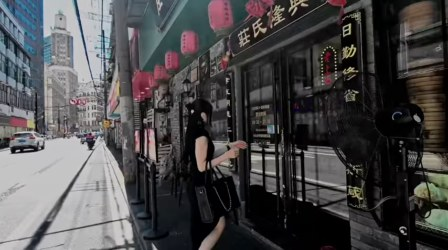 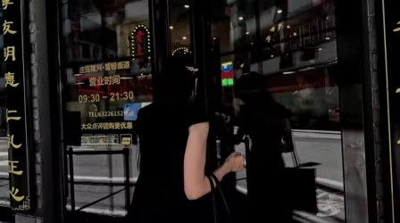 | 一位女子在街边店铺门前，从玻璃门进入。 街景女性店铺入口城市生活动态画面 中景 · 白天 · 日常 · 女子进入店铺 | 0.49 技术 -0.055 美学 +0.046 VLM 4/5 | 抖动 亮度 50 清晰 1155 抖动 17.9 | 保留 2.2 美学模型 0.49（技术 -0.055 / 美学 +0.046）；VLM 精彩度 4/5（权重 20%）；抖动明显 |
| #67 镜头 54 | 4:45.2–4:50.6 5.4s | 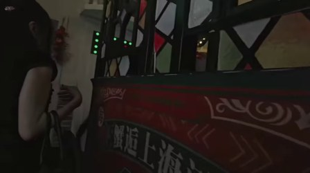 | 一位女性在室内餐厅或酒吧环境中，从背影视角观察着前方的招牌。 室内场景人物特写餐厅招牌夜景女性商业广告 近景 · 夜晚 · 安静、神秘 · 观察 | 0.42 技术 -0.066 美学 +0.028 VLM 3/5 | 低照度、偏糊、抖动 亮度 31 清晰 198 抖动 14.9 | 删除 0.2 美学模型 0.42（技术 -0.066 / 美学 +0.028）；VLM 精彩度 3/5（权重 20%）；画面偏糊（清晰度 198）；抖动明显 |
| #68 镜头 54 | 4:50.6–4:55.9 5.4s | 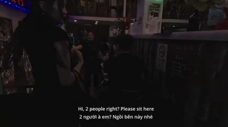 | 夜晚的酒吧里，服务员在吧台前与顾客互动。 酒吧服务人员顾客夜间互动场景 中景 · 夜晚 · 温馨、热闹 · 服务员向顾客介绍座位并进行手势示意 | 0.29 技术 -0.094 美学 -0.003 VLM 4/5 | 低照度 亮度 25 清晰 653 抖动 8.2 | 保留 2.5 美学模型 0.29（技术 -0.094 / 美学 -0.003）；VLM 精彩度 4/5（权重 20%） |
| #69 镜头 55 | 4:55.9–5:00.0 4.1s | 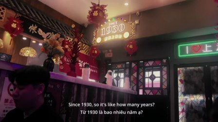 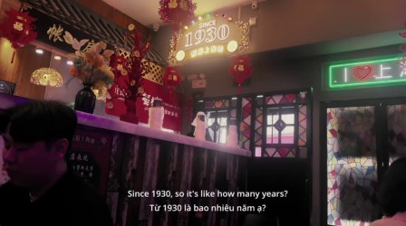 | 一家名为“1930”的餐厅内部，装饰着红色灯笼和节日饰品，一位顾客在前景中。 餐厅春节装饰复古风格夜间节日氛围中文字幕 近景 · 夜晚 · 温馨、怀旧 · 静止 | 0.46 技术 -0.063 美学 +0.040 VLM 3/5 | — 亮度 59 清晰 1105 抖动 0.7 | 保留 2.9 美学模型 0.46（技术 -0.063 / 美学 +0.040）；VLM 精彩度 3/5（权重 20%） |
素材来自 Wikimedia Commons（CC BY / CC BY-SA 3.0）， 署名见 data/raw/SOURCES.md。